CSAPP Notes Chapter1~3
written by SJTU-XHW
Reference: CMU - 213, Computer Systems A Programmer’s Perspective 3rd Edition by Randal Bryant, David O’Hallaron
本人知识浅薄，文章难免有问题或缺漏，欢迎批评指正！
内容很长，写起来很慢 😳
Chapter 0. Intro
0.1 Ints are not Integers, Floats are not Reals
- $x^2\ge 0$：int（32-bit）may overflow；
- $a+(b+c)=(a+b)+c$：floats may discard some “unsignificant” digits；
0.2 Learn Assembly but never write it
0.3 Memory Matters: Unbounded
1 | typedef struct { |
- C/C++ don’t provide any memory protection（out of bounds/invalid pointer/abuse of malloc-free）: can lead to nasty bugs.
0.4 There’s more to performance than asymtotic complexity
(有比渐进复杂度更能够优化性能的做法)
- 渐进复杂度中没有体现的“常数”也很重要；
- 应该在多方面优化性能：算法、数据结构表示、代码过程、循环等；
- Understand system to optimize performance;
1 | void copyij(int src[2048][2048], dst[2048][2048]) { |
0.5 Computers do more than execute programs
- They need to get data in & out: I/O system;
- They communicate with each other over network;
Chapter 1. Bits, Bytes and Integers
1.1 Everythings is bits
本部分知识零碎，应该在数电 + 初级数据结构中接触。
- Each bit is 0 or 1;
- By encoding/interpreting sets of bits in various ways;
- Why bits? - Electronic Implemetation.
- Easy to store with bistable elements.
- Reliably transmitted on noisy and inaccurate wires.
- Base 2 Number Representation
1 Byte = 8 bits；
- Binary：$00000000_2$ to $11111111_2$；
- Decimal：$0_{10}$ to $255_{10}$；
- Hexadecimal：$00_{16}$ to $FF_{16}$；
- 掌握快速 16 进制转 2 进制：$1010=A,\space1100=C,\space1111=F$，B/D/E 在其中；
Data Representation in C language
C Data Type Typical 32-bit Typical 64-bit x86-64 char 1 1 1 short 2 2 2 int 4 4 4 long 4 8 8 float 4 4 4 double 8 8 8 long double N/A N/A 10 / 16 pointer 4 8 8 - 注：单位 bytes，CSAPP 关注 x86-64 架构；
- 注2：Intel x86-64 处理器的
long double定为 10 bytes，但数据增量是 16 bytes，意味着会浪费 6 bytes 的存储空间； - 注3：pointer 值就是虚拟空间的地址，上面也正说明了 32 位和 64 位的名字的来源：这些虚拟内存的地址是 32 bits / 64 bits 长度的值；我们常说的 32 位机器、64 位机器就是指对应地址值的长度是 32/64 bits；
1.2 Boolean Algebra
Developed by George boole in 19C, “True”: 1, “False”: 0;
Operations: And(\&) / Or(|) / Not(~) / Exclusive-or(Xor, ^);
- Exercise: Operate on Bit Vectors;
Example: Representing & Manipulating Sets
Representation: Width
wbit vector can represent subsets of{0,...,w-1};1
2
3
4& <=> Intersection
| <=> Union
^ <=> Symmetric Difference
~ <=> Complement
Shift Operations
- left shift、right shift；
- logic shift：Fill with “0”；
- arithmetic shift：if (negetive) Fill with “1”，else Fill with “0”；
- Undefined Behavior: shift amount < 0 or shift amount ≥ word size；
1.3 原码(true form)、反码(1’s complement)、补码(2’s complement)
补码速译：最高位权重变为负值；
Unsigned range：$0\sim 2^w-1$；
Two’s complement range：$-2^{w-1}\sim2^{w-1}-1$；
模 8 运算：保留补码后三位；
Exercise 1: Mapping between signed & unsigned
（将同一个数码看作不同的数，例如 11111111 可以表示 unsigned 的 255，也可以表示 signed -1，这两者相同的数码被称为 “相同的位模式（bit pattern）”）
这对计算机很重要，因为它原本不知道是 signed 还是 unsigned；
Exercise 2: Casting Surprises（模糊的常数给定，什么时候类型转换？怎么转换？）
什么时候：C++ 书中说，在赋值、比较时进行隐式类型转换（implicit casting），还可以进行强制类型转换；
怎么转换：
- 占用空间小的类型向大的类型转换：同时有 unsigned int 和 int，则向 unsigned int 转换（隐式类型转换）；
- Bit pattern（位模式）保持不变；
编程的麻烦：
1
2
3
4
5
6
7// situation 1
for (unsigned i = n - 1; i >= 0; --i)
func(a[i]);
// situation 2
// 提示：sizeof 的返回值会被编译器认为是 size_t (unsigned long)
for (int i = n - 1; i - sizeof(char) >= 0; --i)
func(a[i]);
Exercise 3: Sign Extension（在不改变值的情况下，将 w-bit 数变为 w+k-bit (k∈Z) 数）
Expanding Conclusion: Make k copies of MSB in signed, but fill “0” in unsigned.
想想为什么。
Truncating Conclusion: mod $2^w$ in unsigned, 很像 mod $2^w$ 但不是 in signed (negative or positive);
1.4 Operations
Unsigned Addition: $sum=UAdd_w(u,v)=u+v\mod2^w$（为什么成立？Truncating Conclusion）；
- 一种溢出，这种溢出是模运算可以描述的；
e.g., $(unsigned)13+5=1101_2+0101_2\Rightarrow0010_2$ (Truncated)
Two’s complement Addition: $sum=TAdd_w(u,v)=UAdd_w(u,v)$（equal in bit pattern, Truncating Conclusion）;
- 两种溢出：负溢出（$sum\le-2^{w-1}$ 时）和 正溢出（$sum\ge w^{w-1}$ 时）;
Unsigned Multiplication: $multi=UMult_w(u,v)=u\cdot v\mod2^w$（与加法同理）;
Signed Multiplication Multiplication: $multi=TMulti_w(u,v)=UMulti_w(u,v)$（与加法同理）;
这意味着计算机的乘法、加法可以共用硬件；
Shift & Power-of-2 Multiply / Divide: 原因可以看作改变权重；
Unsigned: no problem；
Signed: Use arithmetic shift. Add a bias（偏移量 1）to bit pattern and then shift
为什么用 算数移位？因为 Expanding Conclusion；至于什么移位，C++ 标准没有明确说，但绝大多数机器都会算术移位；
为什么要偏移量？使结果向大数舍入；
Negative（取相反数，当然只有 signed 做得到）：flip all the bits and then add 1（“~” 取反 + 1）
在介绍完移位运算后，回忆 1.3 中的 “编程麻烦”，能不能不用 unsigned，通通用 signed （全用补码表示）不就不会出现这些 casting suprises 了吗？确实，C++ 中尽量别用 unsigned，容易出问题；
Java 就是这么做的。取消了 unsigned 的类型，并且禁止了某些隐式类型转换。但因为某些其他的需求，Java 不得不引入算数移位（>>> 和 <<<），就是 C++ 中处理 signed divide 的运算符;
但 unsigned 也有用处：
- 取模运算：利用 unsigned 加法溢出特性；
- 使用 bits 来代表集合（1.2）；
1.5 Miscellaneous
2 的幂次数大小估算：因为 $2^{10}\approx10^3$，这意味着每 3 位十进制数和 10 位二进制数相当，所以 $2^{20}\approx10^6$；
segmentation fault 的产生：64-bits pointer 让程序认为真的有 $2^{64}$ bit 的内存空间，但实际上并不是。所以当程序访问到操作系统未给它分配的内存时，会抛出 segmentation fault；
字长究竟是多大：不确定。一般是由一种语言中指针表示的范围、存储器上最大存储块大小决定。例如 64 位机器就是擅长 64-bits 计算、指针大小 64-bits 的机器；因此一个程序的位数是由硬件和编译器共同决定的；
所以 64 位机器可以运行 32 位程序（向后兼容）；
为了内存对齐，32-bits 下字长相当于 4 bytes，64-bits 下字长相当于 8 bytes；
Byte Ordering
Big Endian（大端序）：现在常出现的地方就是 Internet，即当发送 32-bits 数据包时
- Least significant byte has highest address（前面的 bits 排在地址靠前的位置，符合人类习惯）；
Little Endian（小端序）：目前支持主流操作系统的处理器都能用小端序
- Least significant byte has lowest address（前面的 bits 排在地址靠后的位置）
Representing of integers
Example of
01234567：1
2
3address: 0x100 0x101 0x102 0x103
big : 01 23 45 67
little : 67 45 23 01
Representing of pointers
Representing of strings: Every machine is the same; (ended by ‘\\0’);
1.6 Puzzles
Initialization:
1 | int x = foo(); |
$x\lt0\Rightarrow(x*2\lt0)$ ?
False, $x=TMin$ (negative overflow) ?
$ux\ge0$ ?
True;
$x\space\And\space7==7\Rightarrow(x<<30)\lt0$ ?
True, $(x<<30)==-2^{31}+2^{30}\lt0$;
$ux\gt-1$ ?
Always False, implicit casting：$(unsigned)(-1)=(\sum\limits_{k=0}^{31}2^k)_{10}\Longrightarrow\forall x((unsigned)x\le(unsigned)(-1))$;
$x\gt y\Rightarrow-x\lt-y$ ?
False, $y==TMin\Rightarrow-y==TMin$.
So: $\forall x(y==TMin\rightarrow -x\ge-y)$
$x*x\ge0$ ?
False. Positive overflow.
$x\gt0\space\And\And\space y\gt0\Rightarrow x+y\gt0$ ?
False. Positive overflow.
$x\ge0\Rightarrow-x\le0$ ?
True.
$x\le0\Rightarrow-x\ge0$ ?
False, $x==TMin\Rightarrow-x==TMin$.
$(x|-x)>>31==-1$ ?
False. $x==0$ ?
Chapter 2. Floating Point
2.1 Fractional Binary Numbers
Limitations: Can only exactly represent numbers of the form $x/2^k$; Other rational number have repeating bit representations.
IEEE Floating Point
Numerical form: $(-1)^s\cdot M\cdot2^E$;
- Sign bit $s$ determines whether number is positive or negative;
- Significand（尾数，Mantissa） M normally a fractional value in $[1.0,2.0)$;
- Exponent E weights value by power of 2;
Single precision: 32-bits
$s$: 1-bit; $exp$: 8-bits; $frac$: 23-bits;（$s$、$exp$、$frac$ 代表对应的数据域而已，下略）
Double precision: 64-bits
$s$: 1-bit; $exp$: 11-bits; $frac$: 52-bits;
Normalized values:
$exp$ 不全为 0，也不全为 1；
$exp$ coded as a biased value: $E=Exp-Bias$;
$Exp$: unsigned value of exp field.
$Bias=2^{k-1}-1$, where $k$ is number of exponent bits（当前 $exp$ 字段的 bit 长度，非常巧妙）
为什么这么设定 Bias？
Single precision’s bias: 127（Exp: 1…254, E: -126…127）
Double precision’s bias: 1023（Exp: 1…2046, E: -1022…1023）
考虑为什么 $E$ 要这么表达？因为这么做比较起来非常方便（$Exp$ 0000… 最小，1111…最大）；
Significand $M$ coded with implied leading 1: $M = (1.xxxx…x)_2$
$xxxx…x$: bits of $frac$ field（0000…0最小，此时 M = 1；1111…1最大，此时 $M=2-\varepsilon$）
由于前导 1，normalized value 只能表示绝对值 $[2^{1-Bias},(2-2^{-bitsOfFrac})\cdot2^{Bias})$ 范围的 floating point；
理解：像科学计数法，$2^E$ 相当于十进制中的 $10^E$，用于移位，前面的 $M$ 规定具体数值；
Denormalized values:
$exp$ 全为 0；
$exp$ coded as: $E=1-Bias$;（可以理解为此时 $exp$ 字段全 0 本身没意义，它们的个数来表示 $Bias$ 进而表示 $E$）
Significand $M$ coded with implied leading 0: $M=(0.xxx…x)_2$;
$xxx…x$: bits of $frac$ field;
注意，这里会发现可以表示 “+0” 和 “-0”；
denormalized value 只能表示绝对值 $[0,2^{1-Bias})$ 范围的 floating point；
Special values:
- $exp$ 全为 1；
- 这种编码只有两种情况：
- $frac$ 域全为 0：代表 $\infty$;
- $frac$ 域不全为 0：代表 $NaN$（not a number），例如 $\sqrt{-1}$、$\infty-\infty$、$\infty\times0$ 等；
这样规定就会发现，浮点数恰好可以溢出到 $\pm\infty$，而且错误数恰为 $NaN$；
Visualization： 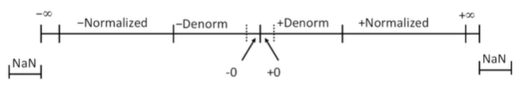
想要理解上面规定的原因还可以用少量的数位来模拟，你会发现之前的设定非常巧妙：
（这里以 $s$: 1-bit，$exp$: 4-bits，$frac$: 3-bits 为例）
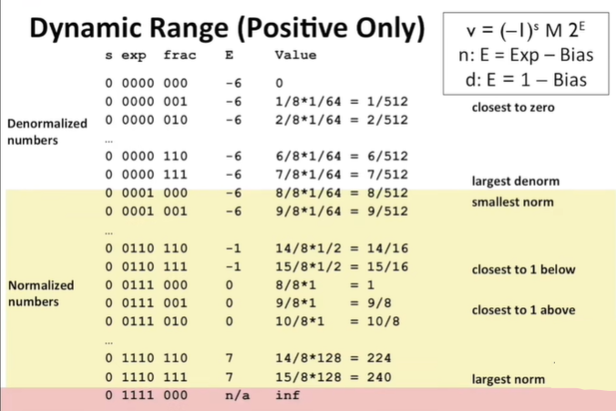
Special Properties of IEEE Encoding
- FP（Floating Point）zero same as Integer zero（All bits = 0）；
- Can almost（except NaN） use unsigned integer comparison；
- Must first compare sign bits；
- Must consider -0 = +0；
- What should comparison with NaN yield？
- Otherwise OK ($+\infty$ 和 $-\infty$ 都能与数比较)；
Exercise: write float pointing in bit-level representation;
1
float F = 15213.0;
- $15213_{10}=11101101101101_2=1.1101101101101_2\times2^{13}$
- $M=1.1101101101101_2$, $frac=11011011011010000000000_2$
- $E=13$, $Bias=127$, $Exp=E+Bias=140_{10}=10001100_2$;
- $Normalized\space value=01000110011011011011010000000000$
2.2 The Operations for Floating Point
Basic idea
- First compute exact result;
- Make it fit into desired precision
- possibly overflow if exponent too large;
- possibly round to fit into $frac$;
Rounding for base 10 numbers
Towards zero（向 0 舍入）；
Round down（向下舍入）；
Round up（向上舍入）；
Nearest Even（default）
即 四舍六入五成双，见概率统计；
超过一半都是 “六” 的情况，少于一半都是 “四” 的情况，正好一半看最后保留位的奇偶；
Rounding Binary number: Nearest Even 与 普通十进制数思路相同；
举例：Round to nearest 1/4（2 bits right of binary point）：
$10.00011_2\Rightarrow 10.00_2$，$10.00110_2\Rightarrow10.01_2$，
$10.11100_2\Rightarrow11.00_2$，$10.10100_2\Rightarrow10.10_2$；
FP Multiplication: $multi=(-1)^s\cdot M\cdot2^E=(-1)^{s1}\cdot M_1\cdot 2^{E1}\cdot(-1)^{s2}\cdot M_2\cdot2^{E2}$
- Sign $s=s_1\space^\wedge\space s_2$;
- Significand $M=M_1\times M_2$;
- Exponent $E=E_1+E_2$;
- Fixing
- If $M\ge2$，shift $M$ right, increment $E$; (That’s why $M\lt 2$)
- If $E$ out of range ($Exp$ out of range), overflow;
- Round $M$ to fit $frac$ precision;
FP Addition: $sum=(-1)^s\cdot M\cdot2^E=(-1)^{s_1}\cdot M_1\cdot2^{E_1}+(-1)^{s_2}\cdot M_2\cdot2^{E_2}$. (assume $E_1\gt E_2$)
- Sign $s$, Significand $M$: Result of signed align & add;
- Exponent $E$: the same as $E_1$, which means $E_2$ will be ignored if $E_1\gt\gt E_2$;
- Fixing
- If $M\ge2$, shift $M$ right, increment $E$;
- If $M\lt1$, shift $M$ left $k$ positions, decrement $E$ by $k$; (The difference between multiplication)
- If $E$ out of range, overflow;
- Round $M$ to fit $frac$ precision;
Mathematical Properties of FP addition / multiplication:
- 具备交换律 (commutative)，不具备结合性 (associative)：舍入的不准确性和溢出、大数和小数之和会丢失小数、大数和大数乘积会变为 $\infty$；
- Every element has additive inverse (相反数) except for infinites \& NaNs；
- 几乎具备单调性 (Monotonicity): $a\ge b\Rightarrow a+x\ge b+c$ except for infinites \& NaNs;
总而言之，在考试时，忘记这些问题不大，想要快速判断是否满足某个定律，只需找特殊：$\infty$、$NaN$、overflow、0，这四者是大多数特例的来源；
2.3 Floating Point in C
float（single precision），double（double precision）；Conversions / Casting:
int、double、float间的转换会改变 bit representation；回忆 signed 和 unsigned 间的转换，不改变 bit pattern，只是改变某些位置的解释方式；
implicit casting 发生在占用小空间的类型（int）向占用大空间类型（double）转换，也可显式声明；
int -> double: 准确转换。因为int大小小于 53-bits；int -> float: Will rounding according to rounding mode；
显式类型转换
double/float -> int- Truncates (截断) fractional part;
- Like rounding toward 0 (可以看作向 0 舍入);
- Not defined when out of range / NaN: Generally sets to
TMin;
2.4 Puzzles
initialization:
1 | int x = ...; |
$x==(int)(float)x$ ?
False; (int)x -> (float)x (rounded)
$x==(int)(double)x$ ?
True;
$f==(float)(double)f$ ?
True;
$d==(double)(float)d$ ?
False; (double)d -> (float)d (rounded)
$f==-(-f)$ ?
True. Even $f==\pm\infty$ is true.
$2/3==2/3.0$ ?
False; $(int)2/3=0$, $(double)2/3.0=0.666…67$;
$d\lt0.0\Rightarrow(d*2\lt0.0)$ ?
True; Even $d*2==-\infty$ is true.
$d\gt f\Rightarrow-f\gt-d$ ?
False; $d==+\infty$ or $f==-\infty$ ?
$d*d\ge0.0$ ?
True. Even $d==\pm\infty\Rightarrow d*d==+\infty$ is true.
$(d+f)-d==f$ ?
False; $d>>f\Rightarrow(d+f)\approx d$;
C1 & C2 结束，请完成 Data Lab！
Chapter 3. Machine-Level Programming Ⅰ- Basics
和前面说的一样，本章不会教学一段段写汇编，只要求看懂 GCC 输出的汇编代码即完成任务；
本章涉及的机器语言运行在 Intel x86-64 机器上；
两种机器代码
- 计算机实际运行的目标代码（一串字节编码处理器执行的指令，难以阅读）；
- 汇编代码：过去用于直接对机器进行编程，现在是编译器输出的目标。
以后说 “机器代码”，有时指第一种（目标代码），有时指第二种（文本格式的汇编代码），它们两者概念几乎相同，可替换。不过为了防止混淆以后对第二种会说 “汇编代码”。
3.1 History of Intel processors and architectures
什么是 Intel 的 x86-64？
x86 是指 Intel 自己的 x86 processors，因为 Intel 这个系列的第一张处理器芯片的代号是 8086（产于 1978）。
随着时间推移，这个系列的芯片不断添加特性、升级演进；Intel 自己跳过了 81 系列，推出过 8286、8386系列等，都是以 86 结尾，所以被称为 x86。
后面的 64 表示这是 64-bits 的机器；
什么是
CISC和RISC？- Reduced Instruction Set Computer（
RISC，精简指令集计算机）：一类装备改良的机器指令集的计算机，思想较新； - Complex Instruction Set Computer（
CISC，复杂指令集计算机）：在RISC出现后，RISC开发者把之前的使用旧指令集的计算机统称为CISC，所以这个概念出现在本体之后，带有贬义；
Intel 采用的是
CISC，CSAPP 中介绍的这方面的知识还是不全面，想要进一步了解CISC需要自己阅读CISC手册；- Reduced Instruction Set Computer（
Intel 芯片的进化
8086: 1978, 5-10 MHz;
First 16-bit Intel processor.
1 MB Address space.
386: 1985, 16-33 MHz
First 32-bit Intel processor, referred to as IA32（Intel Architecture 32），占据了极大市场份额；现在不教它了，因为有更新的 x86-64;
Added “flat addressing”，capable of running UNIX；
Pentium 4E（奔腾 4E）: 2004, 2800-3800 MHz
First 64-bit Intel x86 processor, referred to as x86-64;
收到了产品反馈：性能功耗问题，发热严重，不能无限制增加处理器时钟频率，开始着手多核处理器（一个芯片上放多个独立处理器）；
Core 2: 2006, 1060-3500 MHz
First multi-core Intel processor;
Core i7: 2008, 1700-3900 MHz
Four cores processor;（至今性能也不错）
什么是缓存？大致定义是 a temporary memory used to hold the most recently accessed data;
2015 年的 Intel 芯片架构
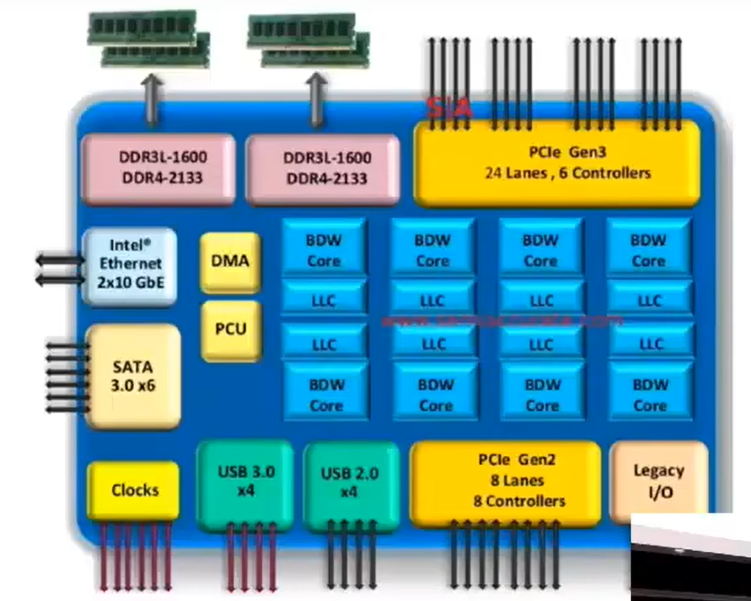
DDR接口是连接到主存储器（DRAM，Dynamic Random Access Memory）的通道；PCI接口是与外围设备（peripheral devices）的连接通道；SATA接口是与不同类型硬盘的连接通道；Ethernet接口是网络接口；
结论：集成到单个芯片上的不仅仅是处理器本身，还有很多逻辑单元所组合起的有机整体；
Intel 的竞争对手：AMD（Advanced Micro Devices）
- 总是跟在 Intel 后面发展，同级别的芯片稍微有点慢，但便宜的多；
- 什么是 ARM？
- 除了 Intel 公司的 x86 类型的处理器，当前常用的、比较主流的另一类处理器是 ARM（Acron RISC Machine），CSAPP 不会深入涉及；
- 创造这种处理器及其对应指令集（RISC）的原公司已经破产，但指令集写的很棒，能自定义，功耗比同水准的 x86 处理器更低。
- 所以后继者建立了一个公司，但这个公司不销售处理器，只向众多公司销售 ARM 的设计许可权。因此，ARM 处理器是很多芯片厂商（尤其 Intel）生产的芯片的一部分，因为 ARM 的优势而被用在方方面面；
3.2 C, Assembly, Machine code
本节只是概述一下整个 C、汇编语言、机器语言的产生过程 和 宏观样貌。
具体对汇编代码的学习内容在下一节。
3.2.1 Definitions
- Architecture (also ISA: Instruction Set Architecture): The parts of a processor design that one needs to understand or write assembly/machine code.
- 架构是处理器设计的一部分。开发硬件的人员在考虑设计机器和对应机器语言的时候，想到了将 “指令集架构” 这层抽象出来。例如针对某个寄存器，特定的指令集等，相当于驱动硬件的接口，将微架构和机器码隔离开。这样，硬件设计者只需要关心微架构，上层的设计者需要关注机器语言以及更抽象的语言就行。
- 开发人员需要了解，以此来编写对应的汇编码、机器语言，以至对应平台的编译器；
- examples:
- Intel: x86, IA32, Itanium, x86-64;
- ARM: (Name is itself) Used in almost all mobile phones.
- Microarchitecture: Implementation of the architecture.
- 例如：缓存大小设计、内核频率设计。CSAPP 中也涉及的很少；
- Code Form
- Machine Code: The byte-level programs that a processor executes;
- Assembly Code: A text representation of machine code.
3.2.2 Assembly/Machine Code View
Programmer-Visible State（在机器语言中需要开发者了解、操作的一些量，含有与真实硬件相关的细节）：
PC (Program Counter, 程序计数器)
- Get the address of next instruction;
- Called “RIP” (in x86-64);
Register file: Heavily used program data（汇编程序中绝大多数数据存放的位置）;
Condition Codes（状态代码，存放于状态寄存器）
- 存储绝大多数当前最近的算数/逻辑运算的状态信息；
- 数据用来判断状态分支；
Memory
- 由地址组织的 byte 数组，实际上是用一种不同方式（这个实现的方式以后的章节会详细介绍）实现的虚构对象，完成操作系统和硬件间的协作，因此称为虚拟内存（Virtual Memory），所以这使得虽然内存（硬件上实际的内存又称为物理内存，Physical Memory）在硬件上可能是零碎的，但汇编开发者看起来的却是一大块可以按地址成块使用的。每个程序都有自己独立的字节数组来访问数据。
- 存放代码、用户信息；
- 使用堆栈数据结构来支持步骤；
这里解释一下经常提到的缓存（Cache），缓存是指一个动作，就是将最近访问的数据存储到高速缓存器（I/O 远快于普通寄存器和外存储器，但造价高，所以容量小）中。下一次访问相同数据时，会直接进入高速缓存器中，速度会更快。
但是“缓存”这个动作对汇编开发者而言也是不可见（invisible）的，这是写在硬件中的动作（前面说的 microarchitecture），即使在汇编层面也没有专门的指令，无法操作。
C 代码如何转变为
Object Code- 在 GNU Tutor 中曾经介绍过从源文件到目标文件的过程；
- C 源文件（*.c, text） 编译器（compiler, C 一般用 gcc）编译为 ASM 源文件（*.s, text），再交给汇编器（assembler，一般用 gcc/as） 汇编为 目标文件（*.o, binary），最后交给链接器（linker，一般用 gcc/ld） 链接用到的第三方静态库，最终变为可执行文件；
- 剩余还有一部分是动态链接库，要么自己写并且编译，放置在指定位置，要么用的是系统环境中的库，在程序运行时动态加载。
举例说明：下面以一个简单的 C 程序为例，演示其汇编代码及含义。
1
2
3
4
5
6
7
8
9
10
11
12
13
14
15
16
17
18// File: sum.c
long plus(long x, long y) {
return x + y;
}
void sumstore(long x, long y, long* dest) {
long t = plus(x, y);
*dest = t;
}
int main(int argc, char* argv[]) {
long x = atoi(argv[1]);
long y = atoi(argv[2]);
long z;
sumstore(x, y, &z);
printf("%ld + %ld --> %ld\n", x, y, z);
return 0;
}现在运行
gcc -Og -S sum.c。-Og参数是较新的参数，与-On（n=0，1，2，3） 优化不一样，为开发人员提供了易读的中间汇编码；另外，如果不加-O参数，就什么都不优化，那么代码同样难以阅读；-S参数意味着gcc套件将仅运行到产生汇编代码（*.s）就停止；
找到代表
sumstore函数的 asm 代码，以函数名 + 冒号开头：1
2
3
4
5
6
7
8
9
10
11
12
13
14
15sumstore:
pushq %rbx
.seh_pushreg %rbx
subq $32, %rsp
.seh_stackalloc 32
.seh_endprologue
movq %r8, %rbx
call plus
movl %eax, (%rbx)
addq $32, %rsp
popq %rbx
ret
.seh_endproc
.def __main; .scl 2; .type 32; .endef
.section .rdata,"dr"这里注意开头含有
.的操作实际不是原先代码的部分，它们与一些其他信息有关。例如为调试器提供行号的、为链接器提供信息表示全局函数的等等。一开始可以不用太过于在意这些，为了演示方便，这里直接删掉说明，如下：1
2
3
4
5
6
7
8
9sumstore:
pushq %rbx ; %rbx 表示访问名为 rbx 的寄存器，pushd 表示数据压入memory栈
subq $32, %rsp
movq %r8, %rbx
call plus ; 调用函数名为 plus 的函数
movl %eax, (%rbx) ; 移动值
addq $32, %rsp
popq %rbx ; 将栈中值弹出到 名为 rbx 的寄存器中
ret ; 当前函数结束，返回
3.2.3 Assembly Characteristics: Data Types
- “Integer” data of 1,2,4, or 8 bytes（不同的整型数据类型，不区分符号）
- Data types / Address（untyped pointers）
- Floating point data of 4,8, or 10 bytes（浮点数处理方式不同，使用不同的寄存器组，之后详细提）
- 在汇编层面不存在聚合结构（aggregate types），例如数组、结构体，因为它们是在编译器层面人工设计的，本质上就是连续的一段内存，以后也会实现；
3.2.4 Assembly Characteristics: Operations
- Perform arithmetic function on register or memory data（算术运算在存储器上的数据）
- Transfer data between memory and register（在内存和寄存器间转移数据）
- load data from memory to register
- store register data into memory
- Transfer control（汇编代码流程控制）
- Unconditional jumps to/from procedures
- Conditional branches
3.2.5 Assembling & Disassembling Object Code: At first glance
先来看 C code 到 汇编语言/机器语言的过程。
当汇编代码被 assembler（汇编器）汇编为目标代码时，这时所能看到的就只有二进制序列了。接下来还以之前的 sum.c 中的 sumstore 函数为例：
1 | 0x0400595: # 表示本函数段从 0x0400595 处开始 |
这里每条指令只做一件事。以 sumstore 函数中的一个语句为例：
1 | *dest = t; /* Store value t where designated by dest. */ |
对应这条汇编代码：
1 | movq %rax, (%rbx) |
对应这条目标代码：
1 | 0x40059e: 48 89 03 |
这里 t 或某些 local variables 会存储于寄存器中（例如上面表示它在寄存器 %rax 中），而 dest 指针值自己也被存储于寄存器中（上面表示 dest 自身的值存于 %rbx 中）；
这里的 (%rbx) 表示 Memory[%rbx]，即 %rbx 值所代表的地址在 Memory 中的位置；
mov A, B 指令就是将值从 A 处移动到 B 处。上面的汇编语句连起来就是：将存放于 %rax 中的值移动到 %rbx 所代表 Memory 地址的位置上；
根据汇编器翻译，这条指令只用了 3 bytes 来编码：48 89 03；
再来看机器语言到汇编语言的反汇编过程（disassembling）。
反汇编的实现和汇编一样，后者是将文本版本（汇编代码）转换为字节码（机器代码）的形式表示，前者将字节码对应解释成易读的文本即可。
如果当前没有源文件，甚至没有汇编代码，那么可以由反汇编器（disassembler）来将目标代码（*.o）或者可执行程序（已链接库的目标代码）转换成汇编代码（*.s）：
1 | objdump -d sum > sum.d # 反编译之前的 sum 程序，-d 将可执行部分反汇编显示到 stdout |
值得注意的是，在汇编代码的层次下，无法再向上还原到源文件（*.c），因为其中的函数/变量名、都在汇编过程丢失了，只剩下一些寄存器的名称和 Memory 地址。
上面使用 objdump 可以得到真正意义上的汇编代码（从机器代码转换而来），此外还有一种方法：使用 gdb。
如果使用 gdb 打开目标可执行文件，运行 disassemble <funcName> 就可以对可执行文件中对应的函数区域进行反汇编。但只显示这些指令的地址 + 翻译指令，不显示字节级的编码。
3.3 Assembly Basics
3.3.1 The names for integer registers
下面列举 x86-64 architecture 的 整数型寄存器（Integer Register）。
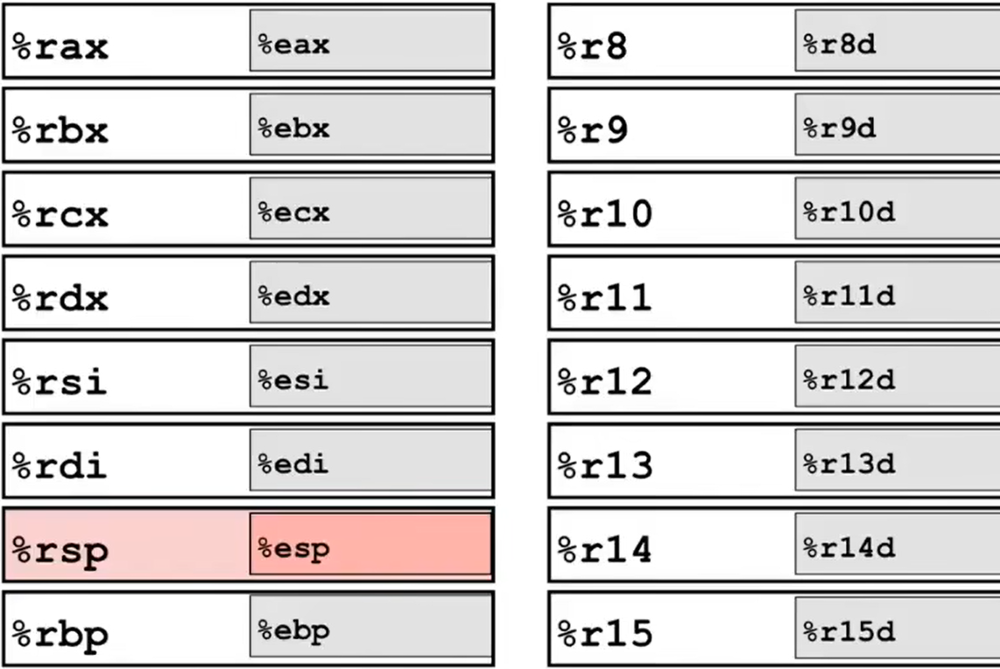
如图，这些寄存器共有 16 个，名字大致分为 2 类，一类是字母表示的（ax/bx/…），另一类是数字表示的（8/9/…）。
目前一个 x86-64 架构的 integer register 总大小有 64-bit。鉴于对以前 32-bit 机器和程序的向前兼容（backwards compatibility），汇编语言允许使用一个寄存器的不同部分，怎么用取决于指令。
对于字母类名称的寄存器（如上图左），如果使用前缀 %r（例如 %rax），那么这个整型寄存器将保存 64-bit 大小的整型数据（即使用全部空间）；如果使用前缀 %e（例如 %eax），那么这个整型寄存器将保存 32-bit 大小的整型数据（即从低位开始使用 32 bits，又称为 low-order 32-bit）。
对于数字类名称的寄存器（如上图右），前缀必须是 %r。如果不加后缀，表示保存 64-bit 大小的整型；如果使用后缀 d，那么将保存 32-bit 大小的整型。
在这些寄存器中，可以使用指令存取数据，而且这些是机器级编程，和具体机器的型号密切相关，每步即必须清楚指出从哪个寄存器到哪个寄存器。
在 x86-64 架构下，最常见的是 64-bit register 的使用，其次是 low-order 8-bit 的使用（用在条件控制中，这个会在下一章介绍）。因此，除非提及，下面默认的 register 全部是以 %r 为前缀的 16 个寄存器。
下面补充一些历史信息，帮助理解这些寄存器奇怪的（quirky）名字：
在早期 IA32 架构下 32-bit 处理器只用到了 8 个寄存器，它们的名字分别是：
%eax、%ecx、%edx、%ebx、%esi、%edi、%esp、%ebp（都是 %e 前缀,意味着存 32-bit 整型）
此位，这些寄存器还能引用 low-order 16-bits（它们是最开始出现的 16-bit 寄存器，没有 e/r 前缀，引用的名称为 %ax、%cx、%bx……），甚至是 low-order 8-bits 和 high-order 8-bits（分别是 %al 和 %ah 等，如下图）。这里不讲述这些旧版本机器的低位寄存器位置的操作指令，不过在下一章会提到操作 low-order 8-bits 的操作指令，因为会涉及汇编条件控制。
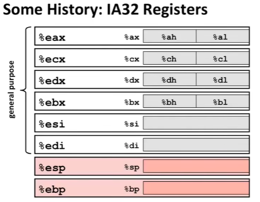
很早以前，各个寄存器的名字有特定含义，代表它们的目的。例如 a 代表 accumulate，c 代表 counter，d 代表 data，b 代表 base，si 代表 source index，di 代表 destination index，sp 代表 stack pointer，bp 代表 base pointer。
现在这些寄存器就是普通的存取数据的结构，名字也就没有特定的含义了——除了名字是 sp 的寄存器。它在目前的 x86-64 架构中也有一个非常具体的目的，就是上面说的，stack pointer，栈指针。
至于后面数字表示的寄存器，是后来从 IA32 架构升级到 64 位（x86-64）时，芯片可以在一个时钟周期处理 64-bit 的数据了，旧的寄存器设计不够用了，所以新添加上去的，因为没有特定用途，就以数字进行命名。
⚠ 说是没什么“特殊用途”，但还是有约定俗成的使用方法的！
例如，这些寄存器分为 “Callee-Saved Register” 和 “Caller-Saved Register”。
其中，Callee-Saved Register 是被调用方管使用的寄存器，数据内容只会在被调方的函数内有效、有意义。属于这类的寄存器有：%rbx、%r12-14、%rbp 和 %rsp，后两者是有特殊含义的，前面的寄存器是供被调方存储临时数据（Temporaries）；
Caller-Saved Register 是调用方保管使用的寄存器，它的作用大多数是沟通调用方和被调方的数据信息。例如 %rax 一般存放返回值，%rdi、%rsi、%rdx、%rcx、%r8、%r9 依此存放调用函数的第 1 ~ 第 6 参数；%r10、%r11 供存储调用方临时数据。
在下面的部分中，你会一遍遍加深对这个说法的印象的。上面的内容在第五章会进一步提及。
至于为什么要有 Callee-Saved 和 Caller-Saved Register，这也会在 5.4 中详细说明。
3.3.2 Move, Operands, and usage
接下来介绍整型寄存器在汇编代码中的使用。
Moving Data Command: movq <SrcR>, <DstR>
为什么命令名中有 “q” ？因为在 Intel 公司设定中，q 代表 quad，是 4 个字，而在 8086 系列中，1 个字被约定为 16 bits（2 bytes），所以
movq指令操作的必须是 64 bits 的寄存器；⚠ 另外请格外注意，Intel 和 Microsoft 使用的 x86-64 架构的汇编语言的这些参数和 Linux 使用的 x86-64 架构的参数顺序不一样！CSAPP 教授的指令语法按照 Linux 来，请不要弄错！不要在 Windows 环境下尝试这些指令！
Operands
Immediate（数据直接量，例如常量整型）: 定义和 C 语言一样，但是需要加上前缀
$;例如：
$0x400、$-523等等；Register Name: 16 个中任意一个整型寄存器的名称。
注意：保留作其他用途的寄存器也不应该被手动使用。前面说了，例如在 x86-64 架构中，
%rsp保留做特殊用途，因为栈中保存其他重要的状态信息，只能由机器内部进行修改。Memory: 8 consecutive bytes of memory at address given by registers.
汇编代码简单访问 Memory 的方法：
法 1: Normal
(%<registerName>)即保存在寄存器中的、8 bytes 连续的地址数据对应的 memory 位置。
也就是说，当把寄存器名称放在括号里时，就是表示把寄存器中数据看作 memory 地址（无论是什么），并用这个地址来引用对应的内存位置。
例如：
(%rax)就是代表取存放在%rax寄存器中的数据对应 memory 位置的引用；请牢牢记住，这种在括号内找地址的形式被称为 Simple Memory Addressing Modes（简单内存寻址模式），表示这个模式下，寄存器被看作指针，括号相当于取地址并找到 memory 对应的引用。
法 2: Displacement
<D>(%<registerName>)即保存在寄存器中的、8 bytes 连续的地址对应 memory 的某个位置，以这个位置为基准，向后偏移
D个 bytes 所对应的内存位置的引用。因此，D一般只取 1，2，4；例如：
8(%rbp)就是代表取存放在%rbp寄存器中的数据向后偏移D个 bytes 的位置对应 memory 的引用；
法 3: Most General Form
D(<Rbase>, <Rindex>, <Scale>)等价于
Memory[Reg[Rb] + S * Reg[Ri] + D]，指使用寄存器Rb中的数据为基，加上S倍率的寄存器Ri中的数据（因此S只取 1，2，4，8 这几个之一），最后总体偏移Dbytes；注意，
Ri不建议为寄存器%rsp;法 3 就是原始意义上的数组自然引用的方式；
可以思考为什么
S只取 1、2、4、8 中的一个。原因很简单，这和它存在的意义有关。我们想在引用数组时，一定希望根据数据类型来缩放索引值，例如int需要缩放 4 倍（4 bytes），long需要缩放 8 倍；小于这些数，则会导致数据错误，大于这些数据会导致空间浪费。
Rules：以上有些 operand 的组合是不允许的。例如：
- 直接量作为 destination，没有意义；
- 为了方便硬件设计，不允许直接从一个内存位置复制到另一个内存位置，必须 2 步：从内存存入指定寄存器，再由指定寄存器存入另一块内存（内存到内存必须经过寄存器）；
Examples：
例如
movq $0x4,%rax可能对应的就是tmp = 0x4;例如
movq $-147,(%rax)可能对应*p = -147;例如
movq %raw,%rdx可能对应tmp2 = tmp1;例如
movq $rax,(%rdx)可能对应*p = tmp;例如
movq (%rax),%rdx可能对应tmp = *p;例如假设下面这段程序可能的汇编代码：
1
2
3
4
5
6void swap(long *xp, long *yp) {
long t0 = *xp;
long t1 = *yp;
*xp = t1;
*yp = t0;
}1
2
3
4
5
6swap:
movq (%rdi), %rax
movq (%rsi), %rdx
movq %rdx, (%rdi)
movq %rax, (%rsi)
ret ; 回到之前调用 swap 函数的位置，结束当前函数执行在上面这个函数体中，
%rdi是保存第一个参数的寄存器，%rsi是第二个参数寄存器，最多用 6 个，这是在执行此函数前就设置好的。剩下寄存器的选择是由编译器自己决定的，每次编译都可能不太一样；
Exercises: Address Computation Examples（根据信息填写下表）
已知寄存器
%rdx存放数据 0xf000，寄存器%rcx存放数据 0x0100。Expression Address Computation Address 0x8(%rdx) (%rdx,%rcx) (%rdx,%rcx,4) 0x80(,%rdx,2) 第一行，就是普通 displacement，
0xF000 + 0x8 = 0xF008;第二行，省略的 general displacement，
0xF000 + 0x0100 = 0xF100;第三行，省略的 general displacement，
0xF000 + 4 * 0x0100 = 0xF400;第四行，省略的 general displacement，
0 + 2 * 0xF000 + 0x80 = 0x1E080;
3.3.3 Arithmetic & logical operations
Address Computation Instruction: leaq <Src>, <Dst>
指令含义：load effective address（加载有效地址）；
指令目标（很抽象，等会慢慢解释）：相当于 C 的
&（ampersand）符号来计算地址，基于想要计算的地址的一些内容（一般是指定内存引用）。同时也作为一种非常方便的算术运算方式。指令的大致过程：通俗来说就是传入的内存引用
Src，leaq会找到这个引用的地址值，并把这个地址传给Dst，最后Dst的值是Src引用的地址，相当于Dst变成了指针，指向了Src；
Dst参数必须是寄存器名称，不能是直接量、内存引用；
Src参数必须是内存引用，允许使用之前的 Simple Memory Addressing Mode，不能是直接量、寄存器名称；
下面举个例子：
1 | long m12(long x) { return x * 12; } |
上面的函数对应的汇编代码可以是这样的：
1 | m21: |
首先解释 (%rdi,%rdi,2)，这是上面要求记住的 Simple Memory Addressing Mode，它代表，把 %rdi（即这里存放函数第一参数 x 的寄存器）中的内容看成地址，进行一个 general displacement：%rdi 的值 + 2 * %rdi 的值，这里巧妙地完成了找到 3 倍的 %rdi 的值，把它作为索引，其对应的 memory 地址引用（注：这个地址很可能不能被程序使用，这里只是借助它进行算术计算）；
然后 leaq 将第一参数（3 倍 %rdi 值索引所对应 memory 的引用位置）对应的地址赋给了 %rax 寄存器。到此为止，%rax 中成功获得了 %rdi 中的 3 倍值，中间的方法虽然用到了指针的概念，但本质不是指针操作，是算数操作（慢慢领悟吧）。
最后使用的 salq 指令很简单，就是底层的移位指令（在后面介绍），将 %rax 的二进制值向左移动 2 位，相当于 × 4，总的来说 %rax 的值就相当于原来 %rdi 的值 × 12，完成了 × 12 的操作。
有同学可能会问，为什么不全都给
leaq来计算 × 12 呢？其实移位在效率上会更快一些。一般 C/C++ 程序在乘常数操作时，会被编译器优化，分解出 $2^k$ 的因子，一部分用leaq计算，另一部分用salq移位。
Some Arithmetic Operations
addq <Src>, <Dst>：相当于Dst = Dst + Srcsubq <Src>, <Dst>：相当于Dst = Dst - Srcimulq <Src>, <Dst>：相当于Dst = Dst * Srcsalq <Src>, <Dst>：相当于Dst = Dst << Srcsarq <Src>, <Dst>：相当于Dst = Dst >> Src（算术右移，arithmetic right shift）shrq <Src>, <Dst>：相当于Dst = Dst >> Src（逻辑右移，logical right shift）xorq <Src>, <Dst>：相当于Dst = Dst ^ Srcandq <Src>, <Dst>：相当于Dst = Dst & Srcorq <Src>, <Dst>：相当于Dst = Dst | Src
切记，别搞错 operands 的顺序！Src 在前，Dst 在后；
incq <Dst>：相当于Dst = Dst + 1decq <Dst>：相当于Dst = Dst - 1negq <Dst>：相当于Dst = -Dstnotq <Dst>：相当于Dst = ~Dst（注意是按位否）
更多指令请参阅 x86-64 指令手册。
下面是个 example：
1 | long arith(long x, long y, long z) { |
对应的汇编代码：
1 | arith: |
这里 %rdi 存放了函数第一参数 x，%rsi 存放了函数第二参数 y，%rdx 存放了函数第三参数 z；
第一步，可以理解为将 %rdi 和 %rsi 值看作地址，找到 %rdi 值 + %rsi 值 对应的 memory 引用，并利用 leaq 将引用代表的地址赋给 %rax，使得 %rax 获得了 %rdi 和 %rsi 值之和的值，之所以不用 addq，是因为 addq 会把结果加到 Dst 上，但这里显然不想修改任何寄存器中的值，只是想把值给到新的寄存器（此步对应 long t1 = x + y;，相当于这里 %rax 存的是 t1）；
第二步，把 %rdx 的值（x）加到 %rax 上，这时的 %rax 存的是 t2（t1 以后不会用了，所以编译器抛弃了，直接用 addq 操作 %rax，这么做可以提升效率，对应 long t2 = z + t1;）；
第三步、第四步，前面说了好几遍，这里说简单一点，就是把 %rdx （原先存 z 的寄存器，抛弃 z 也是因为之后不用 z 变量了，编译器进行了优化）赋以 3 倍的 %rsi 值，并且把 %rdx 的值乘以 $2^4=16$，总的来说，%rdx 被赋以 48 倍的 %rsi（y）的值，对应 long t4 = y * 48;，这时 %rdx 存放的就是 t4 了；
第五步，简单说就是 %rcx 被赋以 %rdi 的值（x） + %rdx 的值（t4） + 4，可以看到，这里编译器想尽一切办法，把 long t3 = x + 4; 和 long t5 = t3 + t4; 这步合起来了，整整省下来了一个 t3 的操作，可谓优化到极致。所以，%rcx 存的是 t5；
最后一步，编译器实在想不到更好的优化方法，只能勉为其难地调用了唯一一次 imulq，把 %rcx 的值（t5）乘到 %rax 上，对应 long rval = t2 * t5;，函数结束，最后存放 rval 的寄存器是 %rax。
Chapter 4. Machine Level Programming Ⅱ - Control
4.1 Introduction to Condition Codes
4.1.1 Processor State of x86-64, partial
前面介绍过，x86-64 架构具有 16 个寄存器，其中 8 个沿用旧 x86 架构的名称，另外 8 个从 8 ~ 15 命名。可以总结一下，从这些寄存器 / flags 可以看出处理器当前的状态：
Temporary data：除去
%rsp的所有 15 个寄存器都是处理器运算时存储临时数据的位置；Location of runtime stack：
%rsp;（在以后的章节会涉及运行时栈）Location of current code control point：
%rip之前没有见过的寄存器，instruction point，和
%rsp一样有特殊用途。它包含了当前正在执行指令的地址，也不能手动修改，一般是通过获取它的值来进行一些操作；
它一般由
call指令 和ret指令等修改；Status of recent tests: Condition Code
- 一共 8 种， 现在只说四种，其他的用到再说：
CF、ZF、SF、OF; - 它们都是 1-bit flag，不是被直接手动设置，而是根据其他指令操作后的结果进行设置（implicit setting）；
- 是汇编条件操作的基础；
- 一共 8 种， 现在只说四种，其他的用到再说：
4.1.2 The meanings for Condition Codes
- Single bit register: 这种寄存器不是之前介绍的整型寄存器，它仅存储 1-bit 数据，专门用于存放 condition codes，它们的名称就是对应的 flag 的名称。先介绍其中 4 种的含义：
CF: Carry Flag (for unsigned, 将两个 unsigned 相加，MSB 的进位)；SF: Sign Flag (for signed, 当 signed 运算结果的 MSB = 1，说明结果是负值，此位会被置 1);ZF: Zero Flag (上一个计算结果为 0 时，此位会被置 1。依靠算术指令内部实现);OF: Overflow Flag (signed 运算溢出的位。因此可以将CF理解为“unsigned 运算溢出的位”);
- 注意：之前说的
leaq不会设置这些 flags；但之前介绍的算术运算指令会。 - 注意2：也有专门利用计算结果值来设置 flags 的指令：
compare 和 test(explicit setting)
4.1.3 Condition Codes: Explicit Setting
Compare: cmpq <Src2, Src1>
- 作用：几乎和
subq一样，但不修改结果值，因为它计算Src1 - Src2并且不会对Src1/2进行任何操作，但会由此设置上面 4 个介绍到的 condition codes； - 内部如何设置 condition codes：主要依据
Src1 - Src2减法操作。CFset if carry out from MSB (used for unsigned comparisons);ZFset ifSrc1 == Src2（即Src1 - Src2运算结果结果是否为 0）;SFset if(Src1 - Src2) < 0（即Src1 - Src2运算结果的 sign 位是否为 1）;OFset if(Src1 - Src2)in two’s complement (signed) overflow（即(Src1 > 0 && Src2 < 0 && (Src1 - Src2) < 0) || (Src1 < 0 && Src2 > 0 && (Src1 - Src2) > 0)，用的就是判断 signed 溢出的条件：两个同号 signed 相加为异号，说明正/负溢出）;
Test: testq <Src2, Src1>
- 作用：几乎和
andq一样，但不修改结果值，只计算Src1 & Src2，并由此设置 condition codes； - 内部如何设置 condition codes：
ZFset whenSrc1 & Src2 == 0;SFset whenSrc1 & Src2 < 0;- 因为按位且不会导致任何的进位，所以不设置
CF/OF;
- 和上面的 Compare 相比，Test 指令可以进行一个参数的判断，例如
testq %rax, %rax，也把一个参数写成 mask，例如testq $0x22, %rax;
4.1.4 Condition Codes: Reading
前面说完如何设置，现在称述一下如何读取使用。这里一般不允许直接访问 flags 对应的寄存器，而是用一系列的 SetX instructions 来读取并操作。
SetX Instructions 的作用就是按照当前的 condition codes，来将指定的单个寄存器的单个 byte 设置为 1 或 0；
SetX Instructions 具体的类型如下：
| SetX | Condition | Description |
|---|---|---|
| sete | ZF | Equal/Zero |
| setne | ~ZF | Not Equal/Not Zero |
| sets | SF | Negative |
| setns | ~SF | Nonegative |
| setg | ~(SF^OF)&~ZF | Greater (signed) |
| setge | ~(SF^OF) | Greater or Equal (signed) |
| setl | (SF^OF) | Less (signed) |
| setle | (SF^OF) | ZF | Less or Equal (signed) |
| seta | ~CF & ~ZF | Above (unsigned) |
| setb | CF | Below (unsigned) |
SetXInstructions 都有唯一参数（语法setX <Dst>），要求是单个寄存器的 low-order 8-bit 的引用名称，这是由这条指令的作用决定的。
看上面的表，就解释一个。以 setl 为例，因为大多数时候我们使用 cmpq 对 condition codes 进行设置，所以当 SF 为 1 时，很可能是 Src1 - Src2 < 0 的情况。但是需要排除 Src1 - Src2 正溢出的情况——正溢出也可能导致结果为负，因此是 SF ^ OF；
最后还有一个问题。setX 是为单个寄存器的单个 low-order 8-bit 设置 0/1，但之前在 3.3.1 中明确说过，我们在 x86-64 架构下一般都讨论 64-bit register 的使用，而那些访问寄存器的 low-order 32-bit（例如 %eax）、low-order 16-bit 的方法用的比较少（在 32 位架构下会多一点）。
而这里，为了条件控制，我们必须访问 64-bit register 的 low-order 8-bit 的位置，这些位置可以由以下名称给出：
- 字母类型命名的 register，不使用前缀
r，而使用后缀l就能代表对应的 low-order 8-bit 位置；例如：%rax的 low-order 1-bit 位置是%al、%rbx是%bl、%rcx是%cl、%rdx是%dl、%rsi是%sil、%rdi是%dil、%rsp是%spl、%rbp是%bpl； - 数字类型命名的 register，使用后缀
b就代表对应的 low-order 8-bit 位置；例如%r8b、%r15b等；
这样操作 64-bit integer register 的 low-order 8-bit，不会影响到其他位的信息；
下面是 example：
1 | int gt(long x, long y) { return x > y; } |
其对应的汇编代码为：
1 | gt: |
已知 %rdi 存放了函数的第一参数 x 的值，%rsi 存放了函数第二参数 y 的值，函数返回的结果就放在 %rax 中。下面逐步分析：
第一步使用了 cmpq 将 %rdi 值 - %rsi 值（即 x - y）计算，并为 4 个 condition codes 进行修改；
第二步，setg 对 %al 操作，这是 %rax 的 low-order 8-bit 的位置，表明如果 ~(SF ^ OF) & ~ZF 成立，即 x > y 成立，那么为 %rax 的 low-order 8-bit 位置置为 1，否则置为 0；显然，这里的 %rax 还需要把前面 7 bytes 全部置为 0，才能成为我要返回的值（(int)0/1），我们应该怎么做呢？
第三步用到了新的指令 movzbl（move with zero extension byte to long）
语法：
movzbl <Src>, <Dst>;作用：把一个
Src数据引用大小的 0 数据 扩展到Dst中（会改变Dst，但不会改变Src）;
那么好，问题又来了，为什么我们明明要把 %rax 剩下的所有 7 bytes 全部置 0，但是汇编中写的却是对 %eax（之前提到的，register 的 low-order 32-bit 位置）置 0，剩下的 high-order 32-bit 不管了吗？
⚠ 实际上，这是 x86-64 架构内部令人迷惑的特性。当一个 64-bit register 从 low-order 只被修改 32-bit 数据时，会自动将剩下的 high-order 32-bit 全部置 0。（但是如果只是修改 low-order 16-bit、low-order 8-bit 时，却不会为前面的部分置 0）
到此为止，%rax 中的数据应该长这样：0x000000000000000?（最后一位取决于 setg 到底 set 了什么），这就是我们需要返回的 x > y 表达式的值，所以函数结束。
4.2 Conditional Branches
前一节的例子描述了如何依靠 condition codes 来修改某个寄存器的 low-order 8-bit 的值，这是实现条件分支的基础。
这一节将利用 condition code 来组织条件分支，本质上也是 reading condition codes；
4.2.1 JX Instructions 【Old】
语法：
jX <LABEL>，这里的<LABEL>是汇编程序中的一个段落标签，在具体例子中会展示。还有一种语法，会在 4.4 中介绍。
作用：有条件（根据 condition codes）/ 无条件跳转到指定部分的汇编代码继续执行；
具体类型（和
SetXInstructions 使用名称类似）：jX Condition Description jmp 1 Unconditional je ZF Equal/Zero jne ~ZF Not Equal/Not Zero js SF Negative jns ~SF Nonegative jg ~(SF^OF)&~ZF Greater (signed) jge ~(SF^OF) Greater or Equal (signed) jl (SF^OF) Less (signed) jle (SF^OF) | ZF Less or Equal (signed) ja ~CF & ~ZF Above (unsigned) jb CF Below (unsigned) Example：
1
2
3
4
5
6long absdiff(long x, long y) {
long result;
if (x > y) result = x - y;
else result = y - x;
return result;
}对应的汇编代码如下：
1
2
3
4
5
6
7
8
9
10absdiff:
cmpq %rsi, %rdi
jle .L4
movq %rdi, %rax
subq %rsi, %rax
ret
.L4:
movq %rsi, %rax
subq %rdi, %rax
ret已知
%rdi保存的是函数第一参数 x，%rsi保存的是函数第二参数 y，%rax保存函数返回值。再次说一下，汇编函数返回前只需要把返回值放在特定的寄存器中就行，只要调用方清除你放在哪就行。比如这里放在
%rax，那么函数结束后，调用方会去%rax访问结果。第一步
cmpq根据%rdi 值 - %rsi 值来设置 condition codes；第二步的
jle对应的条件是(SF ^ OF) | ZF，结合上一步也就是x ≤ y时，跳至.L4标签标记的位置继续执行。这里
.L4是一个标签，.开头表示它是内部的操作或标签，只会出现在汇编代码中，不会出现在目标代码（机器代码）中，所以不会被当作独立的函数。有同学会说，不是说汇编代码就是机器代码的文本表示吗？为啥还有差别？
其实是这样的，汇编代码相对于机器代码，在转换为易读的文本同时，会把一些指令地址设置成内部标签。在汇编转机器代码时，会再计算代入回去。不然你读
jle 0x0F0E2310肯定没有jle .L4好读。后两步的含义已经比较简单了，不再赘述。
上面的内容类似 C/C++ 中的 goto 语句，不建议在 C/C++ 中使用；
4.2.2 General Conditional Expression Translation & Conditional Moves
本小节介绍了 “条件移动” 这种编译器优化的方式，告诉我们在有些情况下，编译器将条件控制一味地翻译成
JXInstructions 不见得是最好的；同时也指明了不应该使用 “条件移动” 优化的情形。
上面介绍的 JX Instructions 真的适合编译器使用吗？效率是最高的吗？如果仔细看上一节标题会发现有一个 “【Old】” 的标志，这说明现在不经常用到它了。如果效率不佳，那么有哪些方法可以考虑呢？为什么呢？
如果编译器将 C++ 代码翻译为上面的 JX Instructions，那么这种翻译被称为 General Conditional Expression Translation，这也是最自然的方法：如果满足某个条件就跳转到哪里执行，否则如何如何。
还有一种方法被称为 条件移动（Conditional Moves），是将 C/C++ 代码中的条件分支（if-else）的 “then” 分支和 “else” 分支全部执行，最后按照条件再决定将谁移动到结果寄存器中。
伪代码如下：
1 | result = the value of Then_Expr |
有人说，这把 then 子句和 else 子句都运行了，平均的时间复杂度上不是会比之前的 General Condition Expression 更浪费时间吗？其实不然，这里的知识和后面章节的 “流水线” 有关。
因为现代处理器采用 “流水线（pipeline）” 的运行方式，在到达一行代码时会关联甚至运行下面几行的代码。现代处理器大概可以同时处理 20 行左右的指令深度（主要取决于事先读入的指令条数）。当运行到含有分支的部分时，处理器会采取 “分支预测技术”，根据上下文猜测会运行到哪个分支，并将猜测的分支事先读入流水线。
如果猜对，那么执行非常迅速，直接读取流水线上的信息，并离开这个分支；但是如果猜错，那么将停止执行当前流水线上的代码，并重新读入另一段分支。这是个耗时操作，较差情况下会花费 40 个时钟周期（40 步普通指令执行时间）。
因此，在某些情况下，使用 Conditional Moves 的条件判断方法可能会比 General Conditional Expression 更高效。
正因如此，大多数编译器在某些情况下都选择 Conditional Moves，而不是上面的 JX 指令（代表 General Condition Expression），所以你几乎看不到 4.2.1 中的汇编代码。如果实在想看到，那么在用 gcc 编译时，给定参数 -fno-if-conversion，这样不允许编译器使用条件移动。
所以在 4.2.1 中大多数情况下的汇编代码应该长这样：
1 | absdiff: |
再稍微解释一下，第一步是将 %rdi 的值（即函数第一参数 x）赋给 %rax；
从第二步开始就是条件移动的方法了：第二步先把 %rax 的值（x）减去 %rsi（y），相当于先做了 then 分支的内容；
第三步是将 %rsi 的值（y）移动到 %rdx 中，并再第四步把 %rdx 的值减去 %rdi（x），相当于完成了 else 分支的内容；
到目前为止，%rax 中存放 x - y 的值，%rdx 中存放 y - x 的值；
第五步才是按照 x、y 的值来设置 condition codes；
最后一步是一个新指令：cmovle;
- 语法：
cmovle <Src>, <Dst>； - 作用：条件移动，按照当前 condition codes 的状态进行移动。其中
cmove就是 conditional moves，le就是之前的X情况（小于等于情况），所以猜测还有cmovel、cmovege、cmoveg……
但是，上面说 Conditional Moves 更快是在“某些情况下”，那么什么是 “另外的情况”？
现在介绍在什么时候，汇编的翻译不应该用 Conditional Moves：
Situation 1: Expensive Computations
1 | val = Test(x) ? Hard1(x) : Hard2(x); |
这种 then 子句和 else 子句都非常难以计算的时候，不应该用条件移动。因为重新读入流水线的时间很可能会少于把两个子句都计算一遍的时间；
Situation 2: Risky Computations
1 | val = p ? *p : 0; |
上面的判断语句必须先判断再进行执行，否则会出现程序错误，尤其是在指针的判断上；
Situation 3: Computations with side effects
1 | val = x > 0 ? x*=7 : x+=3; |
上面的 then 和 else 子句一旦执行，会破坏程序的原义，造成意想不到的后果。
4.3 Loops
4.3.1 Do-While Loop
对于一个计算 x 代表的二进制代码中的 1 的个数的函数：
1 | long pcount_do(unsigned long x) { |
它的汇编代码非常简单，就可以用 General Conditional Expression 的方法，结合 JX Instructions 实现：
1 | pcount_do: |
对应的伪代码：
1 | preparations |
这里注意一下，movl 和 andl 都不算新的指令——之前说过 q 的含义代表操作数的位数，quad 指 4 字（4 × 16 bits），l 就指 2 字，2 × 16 bits；
4.3.2 General While Loop Translation #1 - “Jump to Middle” Translation
从 do-while 到 while 只需要更改一下测试条件的顺序就行。例如上一节的代码改成 while 循环：
1 | long pcount_do(unsigned long x) { |
那么对应的汇编伪代码可以是（一般在编译器优化等级 -Og 时出现）：
1 | goto test; // 先测试 |
4.3.3 General While Loop Translation #2 - “Do-while” Conversion
如果把编译器的优化等级调至 -O1，那么编译器在处理 while 循环时不会采用上面的 ”Jump to Middle“ 的翻译策略，而是采用 转换为 do-while 循环 的策略，这样会更加高效。
这相当于把 C/C++ 代码中：
1 | while (Test) { |
换成了：
1 | if (!Test) |
具体的汇编伪代码会变成：
1 | if (!Test) // 仅进入前判断一下，接下来就变成 do-while |
从这个优化上可以看出，其实 do-while 循环会比 while 循环更高效，但现在的编译器比较智能，只要优化等级不低，这个方面会帮你优化掉的。
4.3.4 For Loop
for loop 的汇编实现没那么简单，我们可能需要向 while 或 do-while 上看齐。比如对如下 for 循环：
1 | for (Init; Test; Update) { |
编译器可以转换成 while 循环，如果使用了 -O1 优化，会优化到 do-while：
1 | Init; |
很多时候，-O1 下的编译器甚至可以识别 Init 块 和 do-while 前的测试块的关联，并且合理舍弃前置的测试块。
4.4 Switch Statements
将 C/C++ 的 switch 语句翻译为汇编是相当有难度的。首先应该弄清楚 switch 语句在 C/C++ 中的一系列特性：
Match integer values；
Fall through cases：当 case 中不存在 break 时，会一直向下运行；
- Merge cases：当一个 case 中没有任何内容时，相当于并入下一个 case（上一点的特例）；
- Default case：对于没有匹配的 cases，会进入最后的 default case（如果有的话）；
当然，现代的编译器对于 switch 语句的翻译绝不是一系列的 if-else 语句的翻译，而是利用了一个数据结构：跳表（Jump Table Structure）；
如下图，switch-case 语句就像一串代码块，每个 case 就是一个块。编译时，switch-case 块会整体一起编译（如下图 Jump Targets），转为汇编指令后，每个块的汇编指令所对应的地址会被存储在一个跳表中（如下图 Jump Table）。这样在根据条件调用相应代码块时，只需要 goto 跳表中的对应地址（ray indexing）就能完成任务，无需一个个比对条件。
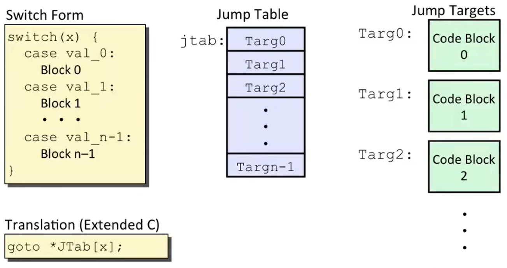
那么，汇编代码是如何在跳表中找到合适的地址的呢？举个例子：
1 | long switch_eg(long x, long y, long z) { |
上面的例子对应的汇编代码可以是（一部分代码）：
1 | switch_eg: |
逐步解释：
第一步将 %rdx（第三参数 z）赋值到 %rcx 寄存器中；
第二步就将 %rdi（第一参数 x）与常数 6 进行做差比较（为什么是 6？因为在源码中 6 是最大的 case），以此修改 condition codes；
第三步 ja 表示只要 %rdi（x）的值（看作 unsigned）在 6 之上，那么就跳至 .L8（看来是 default 片段），否则第四步会无条件跳至某个位置；
这里编译器处理的非常巧妙：使用
ja（unsigned above）而不是jg（signed greater），这样同时把x > 6和x < 0的情况都算入ja的条件中，进一步提高了效率；
这里还需要解释一下，之前没有提到的 JX Instructions 的使用语法。除了 jX <LABEL> 直接跳转至对应标签（direct jump），另一种方法是间接跳转（indirect jump）：jX <effectiveAddress>；
参数是有效地址，可以是寄存器名称，也可以是右值，例如这个例子中 jmp *.L4(,%rdi,8)，后面的部分 .L4(,%rdi,8) 应该很熟悉了：因为标签会被汇编器翻译为代码段的地址，所以它就是 .L4地址 + 8 * x（%rdi 的值是 x），并把这个值看作 memory 的地址。前面的 * 星号就是直接取地址上内容的意思（和 C/C++ 的相同），可以理解为 leaq 相反的过程；这个 memory 地址中的值就是跳表中的一个代码段的地址，所以取出来的也是地址；
第四步跳转的位置如何，我们需要看看剩下来的汇编代码（跳表部分）：
1 | ; read only data |
如上所示，跳表的结构是由汇编代码指定的，如何填这个表是汇编器的工作，不是编译器的工作；
在编译器生成的汇编代码中，.quad 只是个声明，标记表示这里是一个 4 字（4 × 16 bits）的数据，以后汇编器需要填上后面指定标签指令段的地址；
我们可以发现，x < 0 和 x > 6 的情况在之前的代码中被 ja 处理，跳至 .L8（default 代码段），剩余在 switch 中整数缺省的情况（x = 4 和 x = 0）也会自动转至 .L8;
主干看完了，继续看之前提到的各个代码段的汇编代码：
1 | .L3: ; 对应 x = 1 的情况的代码段 |
接下来，编译器的行为就很迷惑了。大家是否还记得，之前在源码的第一行有 long w = 1; 的初始化操作？但编译器不做，因为在很多 case 下并没有用到这个值，所以赋值被推迟了，直到有一个 case—— x = 3，它的代码段是 w += z; 需要用到之前的值，这个时候编译器才开始赋值 1，这么做只是为了提高效率……如下：
1 | .L5: ; 对应 x = 2 的代码段 |
其中 cqto 是 Convert Quadword to Octoword，意为 64-bit 扩展至 128-bit，没有参数，作用是将 %rax 中的 MSB 复制到整个 %rdx 寄存器中（这么做的原因是 Expanding Conclusion），一般紧接着 idivq <dividerR>，将 rdx:rax 中的 128-bit 数作为被除数，divderR 作为除数，进行 signed 除法，商存在 %rax，余数存在 %rdx；
继续：
1 | .L7: ; x = 5 |
明白了跳表的原理，这下明白了为啥 C/C++ 要求 switch 的量必须是可以转换为整型的常量了吧？
无论如何，编译器都会找出你写的所有 case 的最大值、最小值，在此之外的情况会在进入跳表前进行跳转至 default 块；在最值之间的，会出现在跳表中（也就是说 case 的最大值、最小值决定了跳表的大小）；但是在范围中有缺省的情况的，也会补充在跳表中，跳转到 default 块。
小机灵可能会问，诶，如果这些 case 全是负数咋整？或者最小值很大咋整？还能不能建立跳表、用索引了？因为咱之前的
jmp *.L4(,%rdi,8)不就直接把 x 做跳表索引了吗？实际编译器会确保最小值不会低于 0，也不会太大。为此，编译器可能会加上偏置值（bias）让 case 变成小的正数。
还有小机灵可能会问，如果一个 case 是 0， 另一个是 10000，难度在这之中的全部要建表吗？也就是说，如果 case 的间隔很稀疏、很大怎么办？
这个时候编译器会把这些 switch-case 转换成 if-else 语句，再建立 if-else 树，由于稀疏的数据，所以这个树大概率是平衡树，让比对的时间复杂度保持在 $O(log_2(n))$；
综合上面的讨论，无论如何 switch-case 所依赖的跳表的时间复杂度会在 $O(1)\sim O(log_2(n))$ 之间，总是比 if-else 的线性时间复杂度要好。
4.5 Summary for Chapter 4
这章的知识点比较多，在这里总结一下 Chapter 4 的主要内容。
在一开始，我们先复习了之前的寄存器及其代表的处理器的状态，再初步了解了汇编中的重要 flags: condition codes（目前只认识了 4 个：CF/OF/SF/ZF），它们可以看作一个个 1-bit 数据，不能被手动更改，但可以通过特定的方式进行访问。
例如 cmpq 和 testq 能根据计算结果修改 flags，setX Instructions 能根据当前 flags 设置特定的 8-bit 位。我们还了解了几个特殊的指令，例如 movzbl；了解了 x86-64 的 low-order 32-bit 填充特性。
我们不满足于借助 condition codes 仅仅填充几个 bits，我们进一步学习了根据 condition codes 进行流程控制的方法。
首先是比较低效的 JX Instructions，它代表着 General Conditional Expression，利用汇编条件跳转初步实现条件分支；进一步从流水线层面，我们认识到 Conditional Moves 可能是更好、更快的选择，但一定要搞清 3 个禁忌条件。我们还认识了 cmovle 等一系列条件移动的指令，让过程更加方便。
在循环控制方面，我们掌握了 do-while 结构的翻译方法，通过 JX 指令轻松解决；针对 while 循环时，我们想到两种方法：“Jump to Middle” 把判断条件放 loop 的中间，开始循环前跳进去；还有一种是转换为 do-while 的 “set guardian” 方法，效率更高。对于 for 循环，我们也可以容易地将其转换为 while 循环，进一步优化为 do-while，通过合理舍弃 “guardian” 进一步加快运行效率。
在比较繁琐的 switch-case 语句的翻译上，聪明的人们为它引入了跳表的数据结构，利用 jX 的间接跳转在 $O(1)\sim O(log_2(n))$ 的复杂度下完成了分支，远胜 if-else 结构的线性复杂度。
不过上面的几乎所有内容都是在汇编层面实现了一些小的 “tricks” 来帮助提升运行效率，这只是在将代码流程控制的翻译这个 procedure 上加一点东西，或者是改变流程的方法。这都是底层指令逐步堆砌实现更高级指令的实例。
下一章节我们将系统学习汇编运行的整个 procedure，知识点将更为复杂，做好准备！
Chapter 5. Machine Level Programming Ⅲ - Procedure
本章所指的 Procedure 既可以是 function，method，也可以是 normal procedure；
知识补充：什么是 ABI ？
虽然 CSAPP 讲述的是基于 x86 硬件及其运行方式，但更重要的是我们采用了一套被普遍承认的约定—— ABI（Application Binary Interface），这是个机器程序级别的接口。这个接口在第一台 x86 机器被制造出来的时候就出现了，尤其是为 Linux 制定的。它规定了，所有二进制程序、操作系统各个组件、编译器都要对于管理机器上的资源有共同的理解，并且遵守使用规则。
例如之前说的，约定俗成哪些寄存器用来传递函数参数、哪些寄存器用来传递返回值，哪些是 “Caller-Saved Register”，哪些又是 “Callee-Saved Register”，这些都是 ABI 规定的；
到目前，Windows 和 OSX 等操作系统也有自己的 ABI；
5.1 Mechanisms in Procedures
过程机理的概览，下几节会一一回答这些问题；
- Passing control
- To beginning of procedure code（运行过程如何进入一个函数？）
- Back to return point（函数运行结束如何跳转到之前调用位置的下一行？）
- Passing data
- Procedure argument（如何向被调方传递参数？）
- Return value（被调方如何返回数据给调用方？）
- Memory management
- Allocate during procedure execution（某过程开始执行时，内存如何分配以供过程使用？）
- Deallocate upon return（某过程结束后，内存如何销毁？）
- Mechanisms all implemented with machine instructions（以上机理如何在机器代码中实现？）
- x86-64 implementation of a procedure uses only those mechanisms required（示例）
5.2 x86-64 Stack
在此之前，先介绍 x86-64 architecture 的内存栈的机制；
程序总是使用栈来管理过程中调用和返回状态，这主要是利用了栈 LIFO 的性质，这和调用-返回的思想很相似。因此它可以被用于：传递潜在信息、控制信息，分配 local 数据；
x86 的程序栈也存在于内存中，栈底位于 high numbered address（高位地址），而栈顶位于 low numbered address；
前面说的 %rsp 寄存器就是位于栈顶来管理这个过程的。%rsp 寄存器存储的是栈顶的地址，当有数据需要进栈时，通过递减栈指针来完成进栈操作；
之前还说过，%rsp 不应该被手动更改，那么有哪些方法能够使用这个栈呢？
第一个是 pushq 指令。
语法：
pushq <Src>;作用：先从
Src中取得操作数，再将%rsp值减 8（quadword，即 4 × 16 bits，64 bits，8 bytes），最后将从Src处获得的操作数写入到%rsp对应的 memory 地址中；⚠ 需要注意的点：这个栈是先移动指针再往里面写的；
Src可以是直接量、寄存器名称、内存引用；
与之对应的是 popq 指令。
语法：
popq <Dst>;作用：先将
%rsp值所代表的 memory 地址中的值读进，再将%rsp的值加 8，最后将读到的值写入Dst;⚠ 需要注意的点：这个
Dst只能是寄存器，因为前面说了，不允许从内存到内存，也不允许存入直接量；
5.3 Calling Conventions
5.3.1 Passing Control
以一个例子说明：
1 | void multstore(long x, long y, long *dest) { |
这是上面的源码经过汇编得到的结果（稍微删除了一些无关紧要的部分）：
1 | multstore: |
这里注意一下 Passing Control 是怎么完成的：
使用了程序栈来支持 procedure 的数据；
使用
call <LABEL>指令来完成：- 把 return address（调用结束，返回时的位置）加入到栈中；
- 跳至
LABEL执行；
使用
ret指令来完成：- 将栈中的地址弹出读取；
- 跳转到读取的地址；
有的时候会看到
rep; ret的指令行，不用管，它和ret作用一样；
因此，Passing Control 的过程主要由两个特殊寄存器、一个栈支持；运行的动态如下（地址信息是虚拟的）：
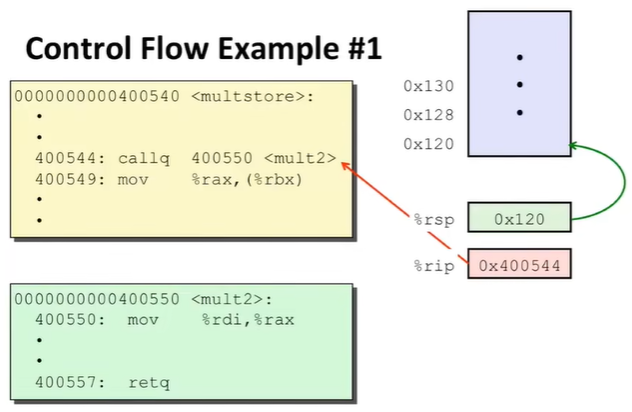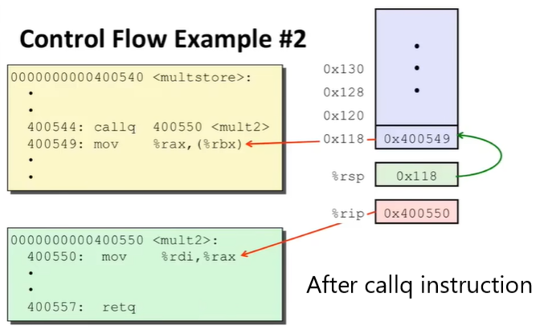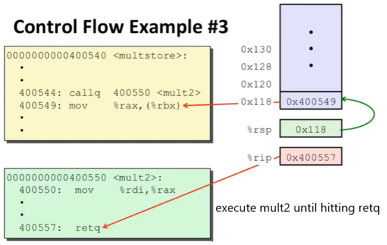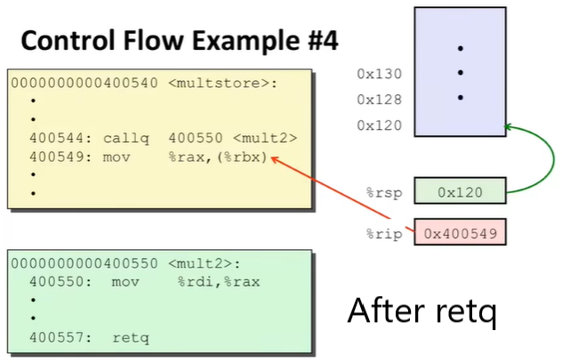
5.3.2 Passing Data
其实在此之前的前几章，我们已经看到了，汇编程序使用约定俗称的寄存器（“Caller-Saved Resgiter”）来完成函数参数、返回值的传递：
%rdi、%rsi、%rdx、%rcx、%r8、%r9这都是 Caller-Saved Register，约定从前到后（顺序可以记下来）用来存放函数的六个参数，供被调用方使用；这里是 integer registers，如果参数不是整型 / 指针，那么会用浮点数寄存器来存放，以后说。
注：在 IA-32 时期，甚至所有参数都放在栈里，这会大大降低程序运行速度的。
如果函数多于 6 个参数那么从第 7 个参数开始，将按顺序存放在栈里，仅需要才会分配栈（这个栈也用
%rsp访问，每 8 bytes 一个参数，但是位于另一个栈帧，和调用方的栈帧互不干扰。具体情况见下一节）%rax是 Callee-Saved Register，约定是用于存放函数的返回值，供调用方读取；
5.3.3 Managing Local Data
早在 5.2 中就介绍了 x86 栈的作用之一就是分配 local 数据。那么调用和返回的功能之一就是可以对函数进行嵌套调用。
此外，我们将栈上用于特定 call 的每个内存块称为栈帧（stack frame），它是特定 procedure、特定 instance 的栈帧。单线程程序共用一个栈，因此通过栈帧来管理各个函数的 Local data；
栈帧的结构如何？是如何管理的？其中究竟放了些什么？
Structure：大家在 C++ 程序设计课程上应该接触过 “变量作用域”，这个时候应该强调了不同函数的局部变量会存在它的栈帧中。所以可以想象，栈帧就是一段一段堆叠在 stack 上的片段，每个未返回的函数独享一个栈帧；
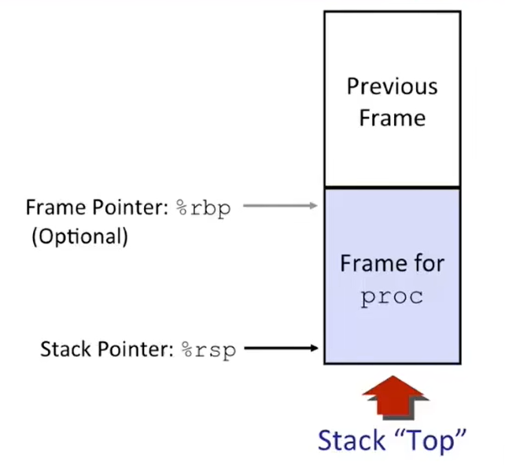
并且
%rsp就在之前说的栈顶，还有一个普通寄存器%rbp可以用来存放两个栈帧交界的位置（只有在一些特殊情况下编译器才会使用它，平时会当作普通寄存器使用）；所以大多数情况下，没有
%rbp指示，汇编程序员甚至不知道下一层栈帧在哪里，这只能靠代码自身管理（大部分情况下编译器知道需要分配多少栈帧、销毁多少栈帧），并且正确释放栈帧（本节的一个例子会演示代码如何自身管理栈帧）；编译器不知道应该分配多少栈帧的特殊情况：分配可变大小的数组 / 内存缓冲区 等情况，这时编译器会无奈选择使用
%rbp管理；也正因如此，递归所需的所有基础结构都由栈的原则所保证；
对于 x86-64 Linux 这一特定机器 + 操作系统而言，栈帧的详细结构应该是这样的：
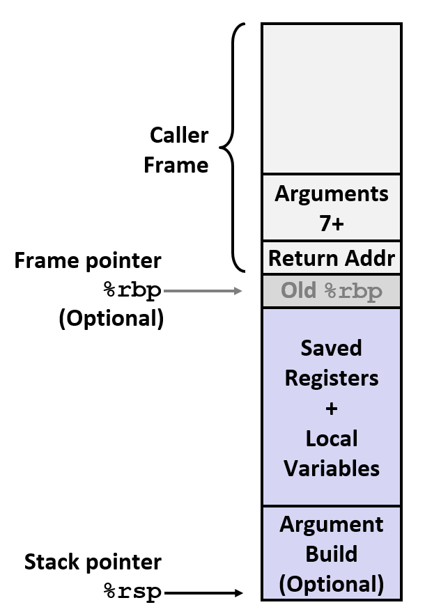
之前在 Passing Control 中提到
call指令压入的返回地址存在 Caller Frame 的最上层，下面压着 Caller 的参数；在两个栈帧之间有空间为可选的旧
%rbp（上一层栈帧的%rdp）空间，当前的%rbp就指向这里（如果有的话）；在当前 Callee Frame 中，最底层是 Callee-Saved Register（保存 Temporaries）和内存中的局部变量；向上就是在 Pass Data 中提到的多于 6 个的传入参数存放的位置。
之前说的 “代码自身管理的方式” 就是在函数返回前将
%rsp回到一开始的地方（上一层栈帧）；
Management：为正在执行、没有返回的函数保留一个栈帧
- Space allocated when enter procedure
- “Set-up” code
- Include push by
callinstruction
- Deallocated when return
- “Finish” code
- Include pop by
retinstruction
- Space allocated when enter procedure
Contents
- Return information
- Local storage（only if necessary）
- Temporary space（only if necessary）
为了演示这一部分，下面列举一个例子：
1 | long incr(long *p, long val) { |
对应的汇编代码：
1 | incr: |
其实函数 incr 的汇编代码很简单，重点不在这，而是调用它的函数 call_incr 以及过程中的处理情况。我们将一步步分析其中的情况。
首先，当上层的 caller 刚刚调用 call call_incr 指令、还没有为 call_incr 分配栈帧时，栈中的情况如下图所示：
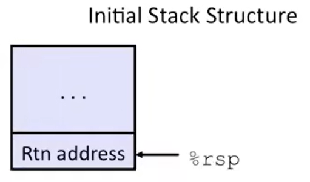
此时栈顶仍然是上层 caller 的 call 指令刚压入的 return address；随后机器读取 %rip 中保存的 call_incr 的地址开始执行 call_incr 函数；
现在请注意上面的 call_incr 汇编代码。
第一步是将 %rsp 的值减去 16，这意味着一口气在栈中分配了 16 bytes 空间，作为 call_incr 的栈帧（此时 %rsp 理所当然在最上层）；
程序一般在栈上分配的空间会比实际需求多一点，这是因为有一些内部的约定，要求保持内存对齐，例如汇编中典型的
.align伪指令。这个分配的值是由编译器计算得出的。
第二步向 %rsp + 8 的 memory 地址写入常数 15213，这就相当于向栈顶的下面 8 bytes 的位置写入该常数；现在栈中的情况如下图所示：
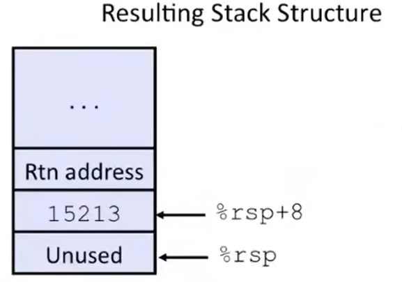
以上的第 1~2 步对应着源码的 long v1 = 15213; 这一步。
第三步将 %rsi（%esi）写入 32-bit 的 3000 整型（还记得之前说的特性吗？高 32-bit 会自动被置 0），因为 %rsi 将来会作为调用函数的第二参数；
第四步还记得吗？找到 %rsp + 8 作为地址对应的 memory 引用（这里就是之前栈中存放常数 15213 的位置）的地址（也就是存放 15213 的地址）赋给 %rdi，这就相当于 &v1 给了调用函数的第一参数；
上面的第 3~4 步对应源码中的 long v2 = incr(&v1, 3000); 的 Passing Data 部分；
而在过程中大家发现，代码是不是自身就管理了 %rsp 的位置和栈的分配？
在完成函数调用的 Passing Data 部分，我们继续进行 long v2 = incr(&v1, 3000); 这一步的 Passing Control 部分：
接下来汇编调用了 call incr，干了 3 件事：%rsp 减 8，存储 return address（这里的是 call incr 下一行指令的地址），并且向 %rip 写入 incr 的起始地址。
于是程序进入了 incr 函数，这比较简单，其中的内存分配、变量设置就不说了。直接跳到 incr 函数的 ret 指令，此时经过内部的代码控制，%rsp 应该回到了之前 call_incr 函数栈帧的顶部（存放 return address 的位置）。于是 ret 也做了 3 件事：将 return address 取出来，%rsp 加 8，并向 %rip 写入刚刚取得的地址——也就是 call_incr 函数中 call incr 指令的下一行。
此时，栈的情况如下图所示（18213 是因为 incr 函数修改了 long *p 参数，还有，别搞混了，这个图里的 return address 是调用 call_incr 的上层 caller 的栈帧中的东西）：
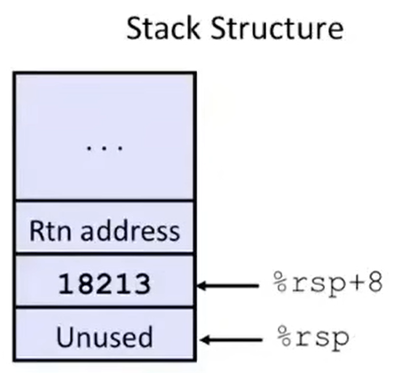
程序进入 call_incr 汇编的最后两步：把 %rax（incr 函数返回值，也就是 v2）加上 %rsp + 8 地址上的内容（18213，也就是新的 v1）作为函数返回值，并且把 %rsp 加上 16，释放了之前分配给 call_incr 函数的栈帧（所以你看看，编译器是不是知道之前分配了多少栈帧空间？是不是不需要 %rbp 的指示？）。函数到此结束，栈中的情况如下：
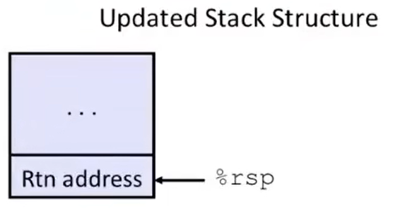
最后的一句 ret 会读取上层 caller 放的 return address，将 %rsp 减 8，并且将 %rip 写入 return address，下一步程序将回到调用 call_incr 的上层 caller 的函数体中。栈的情况如下：
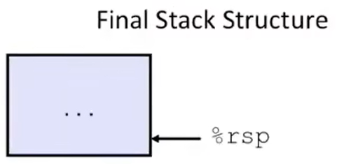
5.4 Register Saving Conventions
之前无论是 5.3.2 讲述传递数据的方法，还是介绍 ABI 的约定，又或是早在 3.3.1 中介绍寄存器的使用，我们无数次提及 register 约定俗成的用法。为了加深印象、补充更多内容，我们这里再梳理一遍。
传递数据的时候，调用方（caller）和被调用方（callee）共同使用这所有的 16 个寄存器。那么，怎么保证 “在 caller 中保存特定数据的某些寄存器，在调用 callee 之后，callee 没有改变这些寄存器，并且还能看作原来的值，继续使用” 呢？
这就是约定 Callee-Saved 和 Caller-Saved Register 的作用了。它们的定义是：
Caller-Saved: Caller saves temporaries values in its frame before the call but can be modified by procedures;
Callee-Saved: Callee saves temporaries values in its frame before using and restore them before returning to caller;
（所以如果程序在某个 procedure 中使用了
%rbp作为普通寄存器，那么能够保证这个函数 return 前%rbp会恢复到上一层的值，不会影响把%rbp当作 base pointer 使用的函数）
回忆一下它们分别有哪些？
所以，如果 caller 真的想要寄存器中的某些值不会被 callee 修改，在调用函数后仍然能使用，那么就应该把值放在 caller-saved register 当中。
此外，ABI 还规定了，callee 在返回前，需要把 callee-saved register 中的值恢复到原来的样子。
此外，一个介于特殊和普通之间的寄存器需要强调一下——%rbp，由于它有时作为分隔栈帧的 base pointer，所以如果有 callee 想要看作普通寄存器来使用它，那么需要在 return 前恢复到原来的状态。
考虑一个问题，为什么 caller-saved register 一般没有要求 restore？
因为首先， caller-saved register 中保存函数参数的寄存器就是为了给 callee 读取的，所以调用前 caller 会设置这些寄存器的值，没有必要保持数据；另外如果 caller 真的想在调用之后使用这些值，那么可以把它的值放在自己的 callee-saved register 中，进而，因为 caller 自己也会是 callee，所以在 caller return 前也要恢复这个 callee-saved register（main 函数除外）；
那么这些约定在一般的代码中是如何体现的呢？下面以之前的 incr 函数为例子，我们加入一个 call_incr2 函数来展示：
1 | // incr 函数见 5.3.3 的例子 |
汇编代码如下：
1 | call_incr2: |
在上层 caller 进入 call_incr2 的第一件事就是把 %rbx 的值放到 call_incr2 的栈帧中。这是为什么？
原来，这个 call_incr2 函数有一个参数 long x，一开始存在 %rdi 中。但是，call_incr2 想要调用 incr 函数，后者要求两个参数，意味着 callee 会用到 %rdi 或更改。而在 call_incr2 的最后，return x + v2; 说明了等会还要用到现在 %rdi 中的值 x。所以，call_incr2 为了能够继续使用 x 这个值，需要将 x 存到 callee-saved register 中，因为调用 incr 之后，无论如何 incr 会将 callee-saved register 恢复到原来的数据的！ 而在此之前，为了能够将这里使用的 callee-saved register 在返回前恢复到上一层调用前的状态，需要将原来的数据存在栈中。
所以现在的情况是，
① caller 为了保留 caller-saved register（
%rdi）的数据（因为要设置新的值给下一层 callee 来 passing data）所以要把%rdi数据放到 callee-saved register 中，这样调用后不变 ；② 想要改变 callee-saved register，就需要保存之前的值，以保证上一层调用方在其中的值不变，而这个 callee-saved register 原先的值就放到了当前 caller 的栈帧中。
考虑一个问题，为什么当前函数不把想要保存的数据直接保存在栈中，而是保存在 callee-saved register 中，完事还要为这个 callee-saved register 原先的值保存在自己的栈帧中？
这是因为，直接保存在栈里不方便。如果有多个需要保存的数据，而且都放在栈里，那么读取方式、读取效率（可能会读很多次）都不佳；而且就没有必要设置 callee-saved register 了。
相反，如果保存在 callee-saved register 中，那么 caller 被调用后一开始统一保存上一层的 callee-saved register 的值，caller 返回前统一恢复上一层的 callee-saved register 的值，中间 caller 还能自由使用这些 callee-saved register，多次使用速度快，并且不用担心调用下一层函数会影响其中的值，岂不美哉！
因此，在 call_incr2 调用 incr 之前，栈的情况如下图所示：
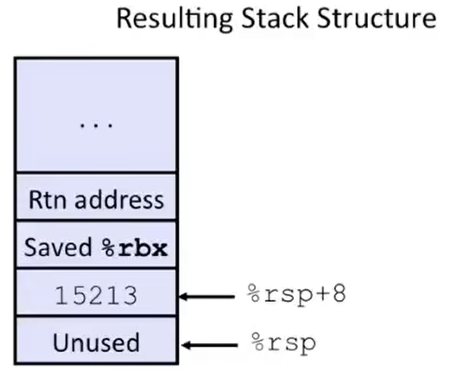
总结：什么时候栈上会出现 Saved-Register 数据？答：当 caller 需要修改 callee-saved register 来保存某些值的时候，caller 会把数据保存到它的栈帧上。仅此一种情况。
5.5 Illustration of Recursion
本节将详细阐释 “递归” 这个技术在汇编层面的样貌。你会发现，因为有了之前所有的 mechanisms 的支持，C 编译器编译递归函数会和普通函数一样简单。
以一个例子开始，这个 pcount_r 函数就是之前 “计算二进制数中有几个 1”（例子在 4.3）的递归版本：
1 | /* Recursive popcount */ |
有一个 trick，就是参数是 unsigned long 类型，这是为了让 x >> 1 运算是逻辑右移，千万不能用 signed 的类型，因为 x >> 1 是算数右移，所以对于负数而言永远不会停下；
下面是对应的汇编代码：
1 | pcount_r: |
你会发现递归版本的源码编译出的汇编代码可能稍微比之前迭代循环版本（loop）的汇编代码更长，这是因为递归版本需要额外管理栈的情况。
学完了前面几章节，你会发现这些代码就比较好懂了：
第一步将 %rax（%eax）置零，因为等会可能要 return 0；然后第二步按照 x == 0 的是真是假的答案来设置 condition codes，交由第三步判断并跳转。这是之前的 General Conditional Expression 的翻译方法；
接下来，将 %rbx 这个 callee-saved register 原来的值备份到当前栈帧中，是因为之后要用这个寄存器保存参数 x；果不其然，下一步就是把 %rdi（x）的值复制到 %rbx 中。
接下来用到 x 的地方，除了传给下一层 callee 的第一参数，就只有 x & 1 了，所以直接在 %rbx 上与 1 按位且。下一步也直接在 %rdi 上逻辑右移 1 个单位，这就是传给下一层 callee 的第一参数（x >> 1）;
准备好 passing data 后，进行 passing control，调用 call pcount_r 进行跳转递归。
如果递归结束，那么紧接着就是把 (x & 1)（即 %rbx 中的值）加到 callee 的结果（%rax）中，得到本函数的结果。最后别忘了在返回前从当前栈帧中恢复 callee-saved register %rbx，函数结束。
举完这个例子你会发现，这就是前几章所提到所有技巧的综合，它们使用了同一个约定——参数怎么传、可以用哪些寄存器、寄存器怎么用（还有是否要恢复）、如何参与计算等等。这个约定防止了不同函数在调用时相互摧毁寄存器中重要的值的异常情况。总之按照上面的方法使用寄存器，可以让生活更美好！
补充一句，有些函数不依赖栈的结构来完成上述的机制，它们会采用堆或者其他数据结构来完成（例如 SML）。
说了这么多，只有自己上手实践、自己亲自编译、调试这些代码，才能体会到各个部分、tricks、mechanisms 组合起来发挥的作用。
5.5 Summary for Chapter 5
本章的内容也是相当之多。为了进一步加深对于汇编 procedure 的认识，我们现在总结一下本章接触到的内容。
在本章开头，我们了解一种规范（接口）被称为 ABI，主要围绕 Linux ABI 展开介绍。ABI 规定了所有二进制程序、操作系统各个组件、编译器对于管理机器上的资源的使用规则，例如寄存器使用的场合和管理方法等等，这在之前的章节中也或多或少的提到过。
想要了解程序运行的总体 procedure，就不得不回答 3 个问题：程序是如何切换运行控制权的，程序如何传递数据的，还有程序如何在运行中管理 Memory 内存的；
为了搞清以上的问题，我们先了解了 x86 架构下的系统栈的简单结构。因为 C/C++ 是依赖于栈来管理程序上下文的语言，并且根据栈 LIFO 的原则，可以被用于：传递潜在信息、控制信息，分配 local 数据。正因如此，栈可以胜任管理过程中调用和返回状态的任务，也能隔离各个 procedure 示例之间的数据，为递归提供了坚实高效的结构基础。
x86 的栈需要注意的点有 3 个：
- 栈就是在内存中的一段连续的数据结构，栈顶位于 low numbered address，栈底位于 high numbered address（头脑里有张图）；
- 栈顶指针由
%rsp保存，一般不能手动修改，指向最上层被使用的空间，这意味着要先减小指针，再放入数据（或先取出数据，再增大指针）； - 想要管理栈中的数据，依靠
pushq和popq这两条指令，这两条指令的参数要求也有重大区别，可以思考一下为什么；
随后考虑程序控制权切换的问题（Passing Control），具体表现就是调用时 caller 如何跳转到 callee、如何从 callee 返回到 caller。通过分析，passing control 由 3 个方面实现：
- 系统栈提供数据结构存储层面的支持；
- 指令
call <LABLE>通过：向栈中添加 return address、改变%rip的值来跳转至 callee 这两大工作来完成 caller 至 callee 的跳转； - 指令
ret通过：从栈中取出 return address、改变%rip的值来跳回 caller 这两大工作完成 callee 重新返回 caller 的控制流程。
第二个点就是程序数据传输问题（Passing Data），在单线程程序中具体表现为 caller 如何向 callee 传递参数、callee 如何给 caller 返回值。在前几章的铺垫下，我们进一步记住了各个整型寄存器在 procedure 及其切换时的约定行为，例如 Caller-Saved / Callee-Saved、传入的函数参数由哪个寄存器 / 给出、函数的返回值由哪个寄存器传输。
前两个问题相对好解决，不过对于 程序如何在运行中管理 Memory 内存 这一部分而言，具体表现在进入 procedure 前如何为其分配空间、结束 procedure 前如何释放空间，需要较为详细地了解 x86 栈和栈帧的基本结构。对于 x86-64 Linux 而言，一个程序栈在当前函数实例中的栈帧从栈底到栈顶应该分别是：
- old
%rbp（上一层 base pointer，如果本层也使用%rbp做 base pointer 的话，就指向此位置）； - 上层 callee-saved register 备份值（Saved-Register）、local variables（函数局部变量）；
- 本函数作为 callee 时传入的超过 6 个的参数存放位置（依次）；
- return address（如果本层函数是 caller，并且正好运行到
call指令结束时）；
每个函数结束后能否完全释放栈帧并回到原位、调用其他函数时能否准确分配足够的空间，则依赖代码的自身管理。
搞清了总体 procedure 的样貌，我们进一步讨论了各个寄存器的细节层面的管理约定。包括以下问题：
- Caller-Saved Register 和 Callee-Saved Register 各自有哪些种类和定义；
- 什么时候使用 Caller/Callee-Saved Register，在使用前后应该做哪些处理工作；
- 为什么要使用 Caller/Callee-Saved Register，栈中的 “Save-Register” 数据是怎么回事。
到了本章结束，我们已经能从大致轮廓上认识一个程序运行的 procedure，仅限于整数、长整数、指针的数据传递的工作。
更多的细节，例如之前提到的浮点数如何传递、保存（浮点寄存器的行为），聚合数据结构在汇编层面如何实现，等问题，会在下一章进行介绍。
Chapter 6. Machine Level Programming Ⅳ - Data
之前我们所见到的程序都是操纵正数 / 长整数 / 指针，它们都是标量整型数据。本章将讨论浮点寄存器的情形和聚合数据结构在汇编代码中的实现。
6.1 Arrays in Assembly
6.1.1 Array Access: Normal Array
众所周知，数组在 C/C++ 中声明的语法为 T A[L];，表示 Array of data type T and length L；
这说明了 2 件事：
- 数组应该在内存中分配的方式：Contiguously allocated region of
L * sizeof(T)bytes in memory; - identifier
A可以被用作指向数组开头位置的指针（类型T*）；
下面的方法都是合理的，请试着分析表达式的含义（
val的类型是int*）：
val[4]、val、val + 1、&val[2]、*(val + 1)、*val + 1;提示：对于指针类型
T*的增、减运算而言，单位 1 会是sizeof(T)，也就是说，对这个指针增加 1，那么指针的值实际增加sizeof(T)；补充 C/C++ 基础-1：指针和数组变量的区别之一是，改变数组变量
val不是正确的，因为val是指针常量；
现在看一个例子：
1 |
|
一些编程建议：① 不要将常数随便写死在程序的各个角落，这被称为 magic number，不但不利于阅读，也不利于维护；② 对于 C/C++ 中复杂的数据类型的定义，建议使用
typedef关键字，这样可以提升可读性；
1 | int get_digit(zip_dig z, int digit) { return z[digit]; } |
上面这个函数的汇编代码如下：
1 | get_digit: |
由于数组标识符也是指针，因此传入的方式和之前的相同。上面的指令含义是找到地址为 %rdi + 4 * %rsi 的 memory 引用，并将这里的值赋给 %rax 的 low-order 32-bit（%eax）;
4 就是编译器自己加上的对于 int 类型大小的缩放因子。
再来一段：
1 | void zincr(zig_dig z) { |
对应的汇编代码：
1 | zincr: |
这里汇编代码对 for 循环的处理是转化为 while 循环并采用 “jump to middle” translation；
首先初始化部分将 %rax 置零作为存放 i 的寄存器，接着跳至 .L3 判断部分；
.L3 判断部分将 %rax（i）和 4 比较，只有 unsigned i ≤ 4（CF | ZF）时才进入 .L4 循环；
在 .L4 循环中，先将地址为 %rdi + 4 * %rax 的 memory 引用处的数据加 1，并且将 %rax 中的数据加 1（i++）；
补充 C/C++ 基础-2：为了掌握 C/C++ 数组的核心思想，你必须能够理解以下的声明的含义：
2
3
int *A2[3]; // 一个长度为 3 的整型指针 构成的数组
int (*A3)[3]; // 一个指向 长度为 3 的整型数组 的指针提示：C/C++ 阅读类型声明的关键是从内向外读，这条道理不仅适用于上面的
int (*A3)[3]，还适用于函数指针等复杂类型的阅读。例如int**(*)(int*, int)是指向参数表为(int*, int)、返回值类型为int**的函数的指针。补充 C/C++ 基础-3：数组变量和指针的区别之一是，在声明数组时程序不仅会为数组标识符这个指针来分配空间，而且会为数组中的所有元素分配空间；但指针只会为自身分配空间。这就导致二者调用
sizeof的大小是不同的；例如sizeof(A3) == 8，sizeof(*A3) == 12，sizeof(A3) == 4;⚠ 另外，如果想判断什么类型的指针取
*后会导致野指针 / 空指针引用错误，应该想想在一开始声明的时候，程序有没有为其自动分配空间。例如上面的例子，如果使用*A3则可能出现空指针引用错误，但*A2就不会。
为什么要 “补充 C/C++ 基础 1~3” ？因为只有清楚了解程序的源码表示的含义，才能去关注、正确认识编译后的代码。
6.1.2 Array Access: Two Dimension Array
⚠ 本节讨论的 array 规模全部是
constexpr（编译前确定）；
这个时候我们再看二维数组的真实含义。
⚠ 注意：由上面的讨论可知，一共有 2 类二维数组，尽管源码的使用上是一样的，但汇编层面完全不同！！！
Nested Array
在 C/C++ 中，一种二维数组的声明语法为
T A[R][C];，其实是T[C] A[R];的另一种写法，表示A是一个包含R个元素的数组，其元素是包含C个元素的数组。这种数组被称为 Nested array，特点是二维数组中所有元素的空间在声明时都被自动分配了，更重要的是，它们是连续的。
另一个需要关注的点是，Nested array 是 “Row-Major” 的，即行优先，第一个索引应该指定行，并且分配空间、存储时，连续的部分也是行，又称 Row Vectors。
Nested Array 的每个行向量
A[i]开始的地址是A + i * C * sizeof(T)，每个元素A[i][j]的地址是A + (i * C + j) * sizeof(T)（由A + i * C * sizeof(T) + j * sizeof(T)化简得来）;
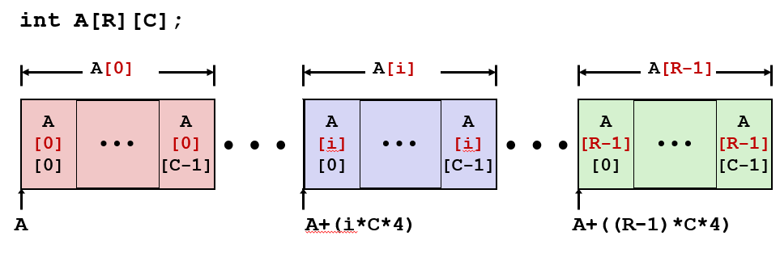
- Multi-Level Array
- 另一种二维数组的声明方式是
T* A[R];，随后在初始化中（在栈中）/ new 上（在堆中）数组的各个元素。 - 这种数组称为 Multi-level array，在声明时，仅为每个一级元素（
int*）进行了空间分配。 - 事实上，这种声明的数组每一行的存储位置可以不是连在一起的，甚至每一行的元素可以不同！因此每个元素的地址计算应该取决于
A中每个元素的值！没法通过标识符A直接取得。
- 另一种二维数组的声明方式是
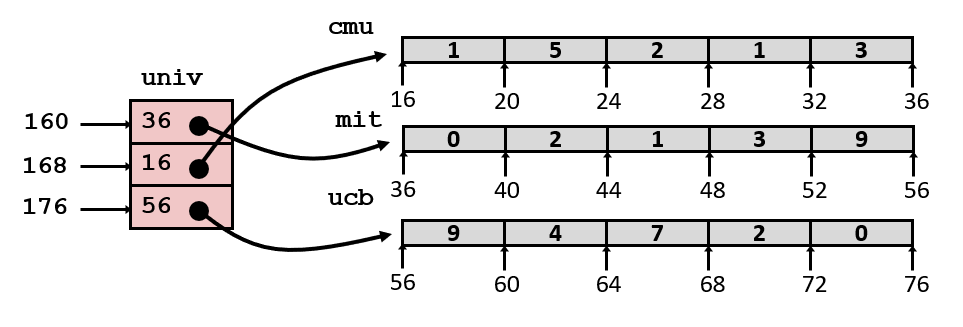
我们继续利用之前 zip_dig 的例子，我们分别声明两种类型的二维数组：
1 |
|
这时对应函数的汇编代码如下：
1 | get_pgh_zip: |
注意到，这里使用的 pgh、 univ 是全局变量，不存储在栈中，意味着在汇编代码中可以直接使用变量名称来表示全局变量。
注意！这时候两个数组的索引方式就有差别了。
对于使用 Nested array 的函数 get_pgh_zip 而言，第一步是相当于进行算术计算 %rax = 5 * %rdi，第二步还是相当于算术计算 %rax = pgh + 4 * %rax。这两步的真实含义是：%rax = pgh + sizeof(int) * 5 * index，这里的 5 就是之前提到的每列列宽；
它可以表示：&Memory[pgh + 5 * sizeof(int) * index]，取得其中的指针；
对于使用 Multi-level array 的函数 get_univ_digit 而言，事情完全不一样！
第一步将 %rsi 的值（digit）乘以 4，没什么好说的；
第二步注意，这里不是 leaq 而是 addq，说明这里先取得 univ + 8 * %rdi 中的值，并把它看作地址，找到 memory 中该地址对应的引用值。最后把 %rsi 加上引用值;
这两步没法写出真实含义的表达式，因为涉及 memory 取值。但可以表示为：
Memory[Memory[univ + sizeof(int*) * index] + sizeof(int) * digit];
最后 get_univ_digit 才把计算好的地址使用 Simple Memory Addressing Mode 取出值，并赋给 %rax（%eax）;
对比上面两种二维数组的汇编操作，这说明了不同的结构决定了不同的计算方法。前者只需要对数组标识符和索引进行算术计算，就能得到地址；而后者必须先由数组标识符和行参数找到一级元素内容，然后用一级元素内容和列索引才能定位具体的元素位置。
6.1.3 Array Access: M × N Matrix
- 对于恒定（constexpr）规模、声明时已分配内存的矩阵而言，就是上一节说的 Nested array；
- 对于作为参数传入的 Nested array（未知规模，但空间连续），则必须进行乘法计算（开销较大）结合其他算术计算得出位置；
总而言之，访问数组的思路就是之前说的 Multi-level array 和 Nested array 两类。其他情况可以同理思考。
6.2 Structures in Assembly
6.2.1 Structure Representation
关于结构体的存储和表示，有下面的 3 条简单规则：
结构体本身在内存中的表示是连续的，并且 “big enough to hold all of the fields”；
结构体中各个字段在内存中的排布顺序严格按照源码中的声明顺序；
编译器来决定所有字段存储的空间和字节偏移、对齐情况（相对结构体地址的位置）；
整个过程对汇编层面透明，汇编代码是看不出来这里定义了一个结构体的，只能看到一系列变量排列在内存上；
6.2.2 Structure Access: Generate Pointer to Structure Member
其实通过 structure representation 就能略知如何用指针找各个字段了。这里以一个例子说明：
1 | struct rec { |
get_ap 函数对应的汇编代码为：
1 | get_ap: |
这里的操作表明了 %rax = %rdi + 4 * %rsi，即 %rax = r + sizeof(int) * idx。这说明了struct rec 中的第一个成员就位于 rec 空间的开头，并按正常的整型数组进行排列。
但是对于另外一个函数 set_val 而言：
1 | set_val: |
第一步可以认为 movslq 就是 取 Src 的 32-bit 数据，0 扩展为 64-bit 数据后放入 Dst，作用是将地址为 %rdi + 16（即 r + 4 * sizeof(int)）的 memory 引用的值覆盖到 %rax 上去。完成了源码的 int i = r->i; 这一步；
从这里可以看出，编译器将 int a[4]、int i 和 struct rec* next 这三个成员排在一起，是没有间隔的，如下图。但某些场合下编译器指定可能会出现间隔，这是是为了内存对齐的原因，下面马上会讨论结构体的内存对齐。
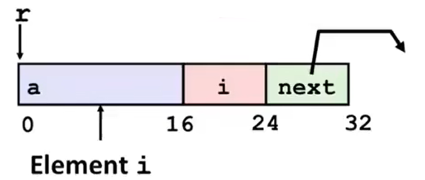
第二步 movl 将 %esi（%rsi 的 low-order 32-bit）的值赋给地址为 %rdi + 4 * %rax（即 r + sizeof(int) * i）的 memory 引用，完成了 r->a[i] = val; 这步；
第三部让 %rdi 的值变为 “地址为 %rdi + 24 的 memory 引用的值”，相当于 r = r->next;
剩下的部分就是完成 while 循环的判断任务。
上面的例子中，还有一个重要的问题没有阐释——结构体的内存对齐问题。
那么为什么要对结构体进行内存对齐？又是如何进行内存对齐的？再来看另外一个例子：
1 | struct S1 { |
对于这个结构体而言，如果每个成员紧紧挨在一起，那么在内存中的排布是这样的：
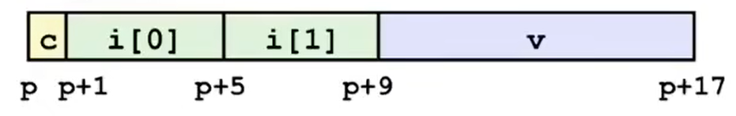
但实际上编译器会在其中插入一些空数据块，让内存排布变成这样：
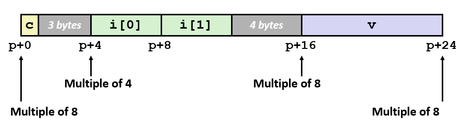
这就是因为，x86-64（和其他很多架构的机器）规定了结构体内存对齐的规则。为什么要有这样的规则？这其实是 硬件效率问题。
对于当今大多数机器的内存系统而言，实际从硬件内存中一次读取的数据量大约 64 bytes，本身称为一个读取的数据块，大小取决于机器硬件中的各种宽度。所以，如果因为没有对齐的地址，而导致读取时特定的数据跨越了两个数据块的边界，那么很可能会导致操作系统需要采取一些额外的步骤来处理这种情况，从而大大降低处理效率。
除了上面的这种原因，还有种原因是，如果这些未对齐的结构体组成了数组，那么想要索引这些数组的计算将会非常复杂，使用起来也非常不方便。
鉴于以上原因，很多架构都采用了这种内存对齐的思路。其实内存对齐除了在结构体这里，我们之前在 “跳表” 的汇编代码（4.4）中也看到了内存对齐的指令（.align）；
如果某种编译器编译程序时，没有安排内存对齐，那么在 x86-64 的架构上运行是没有问题的，因为微架构中有解决这个问题的方法（重新读入），速度可能会慢一点；但有些架构完全不能运行，会抛出内存错误的异常。
那么如何对齐能够解决上面的问题？x86-64 架构提出了以下内存对齐的原则：
Primitive data type requires K bytes, so its address must be multiple of K;
如果原始数据类型的大小是 K bytes，那么它（所对应成员）的起始地址必须能被 K 整除。
Overall structure length must be multiple of $\max\limits_{i}{K_i}$, where $\max\limits_{i}{K_i}$ is the largest alignment requirement in this structure (otherwise “external padding”).
结构体总体的大小必须是该结构体中最大的数据类型大小的整数倍。（完成上一条后，编译器可以通过在结构体尾部追加空数据块来实现）
例如：
- 对于 1 byte 的数据类型（如
char），这种类型成员在内存上的排布没有限制，哪里有空往哪搬； - 对于 2 bytes 的数据类型（如
short），这种类型成员要求起始地址必须能被 2 整除（即 LSB of address must be $0_2$）； - 对于 4 bytes 的数据类型（如
int, float），要求起始地址必须能被 4 整除（即 lowest 2 bits of address must be $00_2$）； - 对于 8 bytes 的数据类型（如
double, long, x86-64下各种 pointer），要求起始地址必须能够被 8 整除（即 lowest 3 bits of address must be $000_2$）； - 对于 16 bytes 的数据类型（如
x86-64 gcc/Linux下的 long double），要求起始地址必须能被 16 整除（即 lowest 4 bits of address must be $0000_2$）；
再例如：
1 | struct S2 { |
这个结构体的内存对齐方式如下：
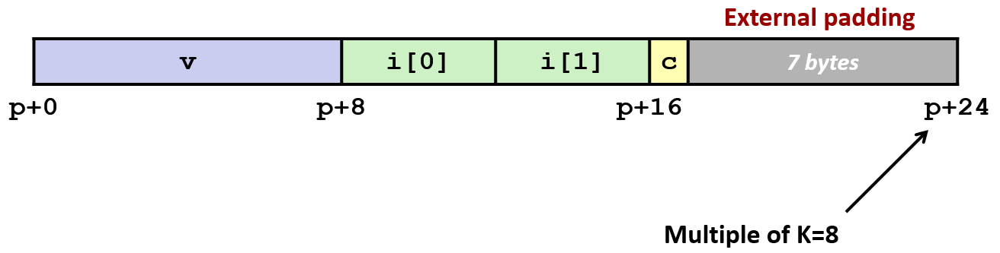
因为其中含有 double 数据类型，所以总体大小必须是 8 的整数倍；又因为整体长度不是 8 的整数倍（p + 17），所以尾部补充空数据块到 p + 24;
6.2.3 Accessing Arrays of Structure
更进一步地，如果有一个结构体数组，并且结构体是被正确定义的，那么编译器就能很容易地确定各个结构体的大小、成员位置和数组的大小，从而在其他使用到的场合为其正确地分配空间、索引成员；
来看下面的例子：
1 | struct S3 { |
如果你使用 sizeof(S3) 的话，你会发现值是 12，说明编译器生成的空数据块的大小也计算在内。具体的结构如下图所示，在 i 和 v 成员间、结构体尾部都有分配空数据块：
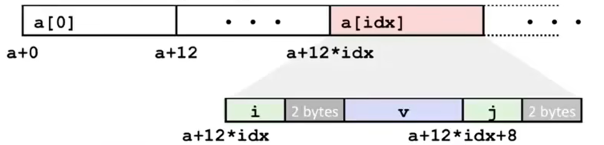
还有使用它的函数：
1 | short get_j(int idx) { return a[idx].j; } |
对照 S3 结构体的内存分布图，你就会发现这个函数的汇编代码也没有那么难以理解：
1 | get_j: |
我们来解释上面例子的汇编行为：
第一步是相当于算术运算 %rax = 3 * %rdi;
第二步是 %rax = a + 8 + 4 * %rax，实质上是 %rax = a + 8 + 4 * 3 * idx，对照上面的内存分布情况可以理解，a + 8 就指向 a[0].j，而后面加 4 * 3 * idx 则是因为每个结构体占位 4 * 3 bytes = 12 bytes 的空间，这样就对应着 a[idx].j 的位置了。
这里的总结一下遇到的乱七八糟的
movXXX指令。
movzbl和movsbl的作用相近，都是将 8-bit 扩展到 32-bit。但前者是 zero extension 零扩展（根据 extension conclusion，针对 unsigned 的扩展），而后者是 sign extension 符号扩展（针对 signed 的扩展）；
movzwl和movswl很像，前者是 16-bit（1 word）零扩展移动至 32-bit，后者是 16-bit 符号扩展移动至 32-bit（long）；
movzlq和movslq同理。如果你会看指令名称的含义的话，上面的内容就无需记忆了：在
mov<A><B><C> <Src>, <Dst>中，A 表示扩展种类，可以是
z（zero extension）、s（sign extension）；B 表示扩展源（
Src）的大小，可以是b（1 byte，8 bits），w（word，1 字，16 bits）、l（2 字，32 bits）、q（quadword，4 字，64 bits）；C 表示扩展目标（
Dst）的大小，可以取的值和 B 相同，但两者不能同时取一个值。除此以外就是普通的
mov<X>（没有扩展功能）和条件移动mov<cond>指令了。
6.2.4 Saving Space
现在，我们了解了结构体的基本排布和表示，也知道了结构体内存对齐的规则。有些同学可能会发现，诶，因为结构体各成员在内存中的排布顺序严格按照源码声明的顺序，那么结构体中各个成员排布的不同，是不是会导致结构体最终所占的大小不同？
答案是肯定的，所以，有必要讨论一下 “按什么方式声明结构体，能够让指定结构体的空间占用最小” 这个问题。下面是结论：
将占用空间较大的数据类型声明在前面。
这种贪心算法是有效的。因为所有数据类型的大小只有 1、2、4、8、16 bytes，全是 2 的整数次幂，在数学上来说能够严格证明。
下面的例子中，S4 和 S5 相比，S5 更节省空间：
1 | struct S4 { |
6.3 Floating Point in Assembly
6.3.1 History & Background for Representing FP
在 x86 架构中，floating point 的表示有着比较深的历史。
x87 FP
很早之前，Intel 的 8087 芯片和 IEEE 浮点数标准一起诞生，安装在 8086 处理器上，是第一个能够完全处理 IEEE 浮点数运算的集成单元。但是编程模型从现在看来比较糟糕，所以 CSAPP 第三版就把这方面的内容完全移除了（expunged）；
MMX FP
1997 年 Intel 公司推出了多媒体扩展指令集 MMX，它包括57条多媒体指令。MMX 指令主要用于增强 CPU 对多媒体信息的处理能力，提高 CPU 处理 3D 图形、视频和音频信息的能力。
SSE FP
随着人们日益增长的精神文化的需要，例如核显渲染的浮点数运算需求增长，人们迫切需要并行计算的手段，于是一个全新的思路就出现了——SIMD（Single Instruction Multiple Data），单指令多数据，和整型寄存器不一样，我们在浮点数寄存器上多放几个数同时计算，那么运算速度不就上去了？
紧接着，一套新的指令拓展集 SSE（Streaming SIMD Extension）被设计出来，兼容 MMX 指令，配合一套浮点寄存器，来完成标量浮点数，或者单指令多数据的浮点数的计算。
AVX FP
在2010 年 AVX 将之前浮点运算数据的宽度从 128 bits 的扩展到 256-bits。同时新的 CPU 架构下数据传输速度也获得了提升。AVX 指令集在 SIMD 计算性能增强的同时也沿用了的 MMX/SSE 指令集。不过和 MMX/SSE 的不同点在于，增强的 AVX 指令在指令的格式上也发生了很大的变化。x86 (IA-32/Intel 64) 架构的基础上增加了prefix，所以实现了新的命令，也使更加复杂的指令得以实现，从而提升了 x86 CPU的性能。
AVX 并不是 x86 CPU 的扩展指令集，可以实现更高的效率，同时和 CPU 硬件兼容性也更好，在 SSE 指令的基础上 AVX 也使 SSE 指令接口更加易用；
6.3.2 Programming with SSE3
在 SSE 第 3 版中，指明了 x86 架构有 16 个 floating point registers（和之前的 16 个 integer registers 完全不同），每个 floating point register 空间大小 16 bytes（大概是 integer register 的两倍大）；
它们又叫 XMM Register（名称的历史渊源比较多，此处省略，感兴趣看 CSAPP 原书 P294），所以这些寄存器的名称：%xmm0 ~ %xmm15;
其中，按照指令使用的不同，每个 XMM Register 都可以存储：
- 16 个 1 byte 整型（
char）； - 或 8 个 2 bytes 整型（
short）； - 或 4 个 4 bytes 整型（
int）； - 或 4 个 单精度浮点数（
float）； - 或 2 个双精度浮点数（
double）； - 或 1 个 单精度浮点数（
float，没存满，有剩余空间）； - 或 1 个 双精度浮点数（
double，没存满，有剩余空间）；
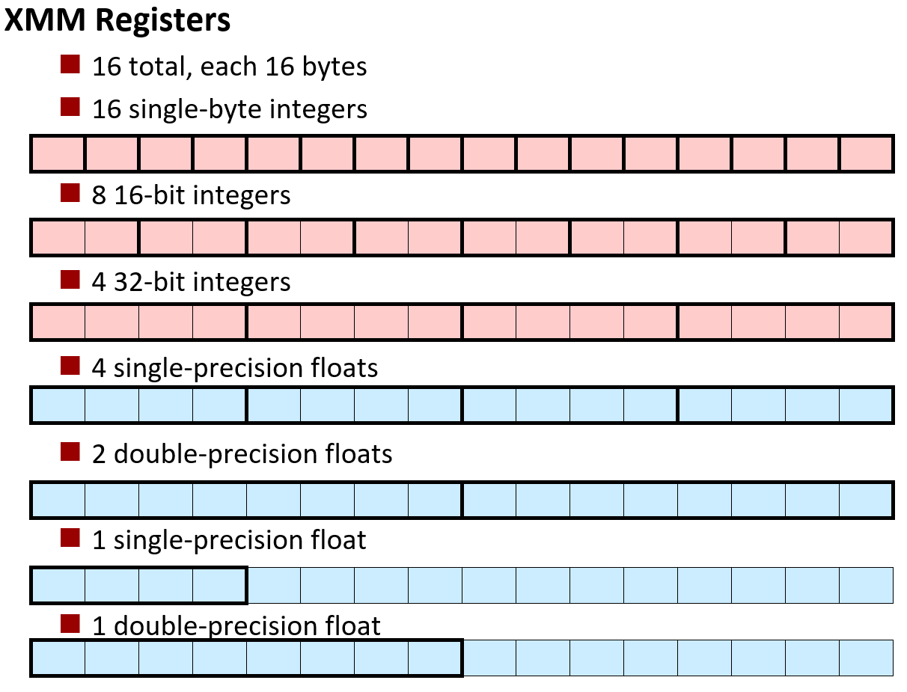
这意味着浮点数寄存器既可以处理整型，又可以处理浮点数类型；既可以处理一个数的运算，又可以多个数并行运算。
这种一次计算单个数的指令被称为 Scalar Operations（标量运算），一次并行计算多个数的指令被称为 SIMD Operations（单指令多数据运算）。
具体的命令长什么样子的呢？还是经典的 名称+后缀 命名方法，所以如果你能读懂命名方法，那就不用记忆太多的指令了。
对于浮点数运算而言，主要有 4 种指令：addss、addps、addsd、addpd；
会读的同学已经懂了，就是 <OP_NAME><OP_TYPE><DATA_TYPE> 的组合嘛！
OP_NAME就是运算的名称，这里是add加法运算（显然还有mov移动、sub减法等等）；OP_TYPE是运算类型，上面提到的s代表 Scalar 标量运算（一次算一个数），p代表 Packed 多数据运算（一次算一组数）；特别地，如果强调是对齐的数据，那么
OP_TYPE还有前缀a代表 aligned，例如：movapd;DATA_TYPE是运算的数据类型，s代表 Single precision floating point，d代码 Double precision floating point；
所以举个例子，addpd 就是双精度浮点数的 SIMD 加法运算指令嘛！
运算的参数和之前的整型寄存器运算一样，<Src>, <Dst>;
运算的内存表示就是如图：
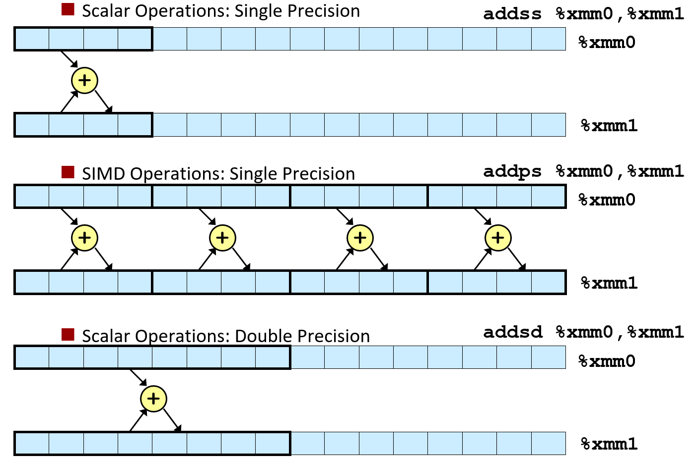
除此以外，FP 还有 2 点需要注意：
FP Registers 的 Saving Conventions：
%xmm0 ~ %xmm15就是依次传递参数的 register，参数多于 15 个浮点数类型，则和多出 6 个的整型参数一样，会放到栈帧中去；%xmm0也是约定返回浮点数值的存放位置；所有的
XMMRegister 都是 Caller-Saved Register，没有 Callee-Saved Register；
FP 的还有众多的命令等待认识，不过最重要的还是之前提到的记忆指令的命名方法，理解了命名方法就能更少地记忆指令；
FP 数据比较指令：
ucomiss（Unordered Compare Scalar Single Precision Floating Point）、ucomisd（Unordered Compare Scalar Double Precision Floating Point）；和
cmpq大致相似，会设置 condition codes，包括CF/ZF/PF；FP 常数使用：这里
$符号只能接整型常量，所以如果要使用浮点数常量，需要xorpd %xmm0 %xmm0等类似指令运算出 / 从内存中读入才能使用。
事实上，之前我们一直担心的 “浮点数如何通过寄存器传递参数” 等问题，只要有了命令就非常简单，操作方法几乎和 integer registers 一样。下面是一个例子：
1 | float fadd(float x, float y) { return x + y; } |
1 | fadd: |
函数 fadd 和 dadd 没有什么好说的，主要看 dincr：
第一步 movapd 见名知意，Move Aligned Packed Double Precision Floating Point，成组移动双精度浮点数，参数类型和其他的 mov 指令相同；
这里的 %xmm0 里装的是函数第二参数 double v（第一参数是指针整型，所以放在 %rdi），移动到了未使用到的 %xmm1 寄存器中；
第二步 movsd，Move Scalar Double Precision Floating Point，移动标量双精度浮点数，将地址为 %rdi 的 memory 引用值（也就是 p 指向的内存 double 数据）赋给 %xmm0（x），并且最终将作为返回值返回；
第三步就是标量将 %xmm0 的数据（x）加到 %xmm1 的值（v）上，完成了 *p = x + v;
第四步就将计算结果 %xmm1 的值（t）标量移动到地址为 %rdi 的 memory 引用区域中（p 所指向的区域），完成 *p = t;
6.3.3 AVX Instructions
AVX 新增的指令可以说是非常地多，使用方法、命名规范和之前所有的命令不同的是，加了前缀 “v”，其他都相近。
mov类命令：vmovss/vmovsd/vmovps/vmovpd/vmovass/...;命名规范见前面的叙述；
cvt（convert）类命令，一般实现浮点和整型之间的转换：vcvttss2si/vcvttsd2si/vcvttss2si/vcvttss2siq/vcvttsd2siq;vcvtsi2ss/vcvtsi2sd/vcvtsi2ssq/vcvtsi2sdq;有点长，但是命名规范清楚：
vcvt是cvt类命令的前缀；中间有
t表示 truncation，进行截断（出现在浮点向整型的转换中）；后缀
XX2YY是 从XX类型转换到YY类型的意思，XX/YY可取的值有：ss/sd/ssq/sdq/si(integer, 32-bit)/siq(integer, 64-bit);
arithmetic 类命令：
vaddss/vsubss/vmulss/vdivss/vmaxss/vminss/vxorps/xandps/sqrtss/...新的指令名：
sqrt，之前 integer registers 的指令所没有的；比较类命令（和 SSE3 相同）：
ucomiss/ucomisd;
6.4 Summary for Chapter 6
本章的内容密度也相当之大，有必要总结回顾一下本章所学的全部内容。
本章的一开始我们复习了 C/C++ 中指针和数组的准确定义，从分析二者的使用方式和 2 种区别（常量性、空间分配的自主性）方面入手，从较深的角度考虑了 数组标识符的含义和多种声明方式，以及这些声明方式如何阅读、如何理解。这样我们就能准确地回答：不同标识符的 sizeof 判断问题、空指针/野指针的出现问题，也有助于我们理解在汇编中数组的呈现方式。
在了解数组在 C/C++ 中的地位后，我们先讨论了普通一维数组的内存分布和访问方式。
无论是存在于程序栈帧中的一维数组（T[] 声明法），还是存在于堆中的一维数组（T* 声明法），它们的排布都是位于连续的、 L * sizeof(T) 大小的内存空间中，数组标识符可以看作指向开头位置的指针常量。因此，对于一维数组的汇编访问就是看作一串连续的同类型数据排布，按照 Simple Memory Address Mode 进行索引即可。
而后我们从恒定的（constexpr，编译前确定）数组规模出发，进一步学习二维数组的情况。
由于 C/C++ 的语言特性，二维数组的两种声明方式（Nested array T[][] 和 Multi-level array T*[]），尽管二者的使用方法几乎一致，但所对应的内存排布方式 和 汇编操作性质完全不同。
前者在声明时，所有元素的空间都会被自动分配至栈中，并且以 “Row major” 的方式连续排布；而后者则仅有一级元素（T*）被自动分配空间，并且指向的每一行数组之间的存储位置可以不连续。
内存结构上的差异就决定了这两种数组在汇编代码访问方式的不一致。访问 Nested Array 的某个元素时，只需要对数组标识符和索引进行算术计算（&A[i][j] == A + i * C * sizeof(T) + j * sizeof(T)）就能得到相应地址；而访问 Multi-Level Array 时却必须先由数组标识符和行参数找到一级元素内容，然后用一级元素内容和列索引才能定位具体的元素位置。
讨论完固定规模二维数组的内存排布和访问方式后，我们将眼光拓展到可变规模的 Nested Array（即 M × N Matrix）上。按照所掌握的知识，我们也可以从普通固定规模的两种二维数组出发，类比出访问这种可变规模二维数组的汇编实现。
聚合结构除了数组，还有一个重要的部分——结构体，也是 C++ 中类的前身。
结构体在内存中的表示遵循简单的 3 条原则：连续排布、严格按声明顺序、编译器决定字段内存对齐。
在观察几个例子后，我们发现在有些情况下，结构体的每个程序紧密排布，访问方式与数组相近；但有些情况编译器会在成员间插入空白数据段（也计入数据结构的总大小）。于是我们分析了结构体内存对齐的两点现实原因和两点对齐的原则（“起始地址整除原则”、“最大倍数原则”）；我们根据这些原则能够正确认识结构体在内存中的组织情况，并以此对程序进行存储方面（如何声明结构体成员，以获得最小的占用空间）和性能方面的改进。
对于结构体所组成的数组，则可以看成完整的结构体所为一个基本元素所组成的数组，一级索引方式与普通数组相同，二级索引方式和单一结构体相同，在汇编层面共同构成结构体数组针对单个元素、单个成员的索引表达式。
虽然聚合结构对于汇编层面来说完全透明，但以上建立的规则和约定让底层的一个个指令共同实现了聚合结构的高级功能。
除了阐明聚合结构在汇编层面的实现之外，我们还整理了非常多的 mov 指令。从中我们归纳出了指令命名的规则，这个规则适用于其他几乎所有指令，可以帮助我们少记忆指令、在遇到没有见过的指令时能够推测出其大致作用。
最后，我们提及了浮点数指令的历史，及其在内存中的整体存储、汇编层面的使用。
在 SSE3 指令拓展集中，16 个 XMM Register 既可以存储标量数据，又可以存储成组的数据；既可以存放各种数据类型的整型数据，又可以存放各种数据类型的浮点型数据。在此基础上，我们接触到了两类运算方法（Scalar Op 和 SIMD Op）及其对应的指令，使用方法和整型的情况相近。
此外，关于 FP Register 的 Saving Conventions、比较指令和常数的使用，进一步加深了我们对浮点数的汇编操作的理解。
另外介绍的 AVX Instructions 有助于帮助我们理解某些浮点数操作的汇编代码的含义。
Chapter 7. Machine Level Programming Ⅴ - Advanced
7.1 Memory Layout in x86-64
内存（虚拟内存）本质上就是一个很大的字节数组。而之前观察 memory 的角度要么是从汇编 Simple Memory Address Mode 的访问角度，要么是从 x86-64 的程序栈的角度来看内存的。本节将从更为宏观、更为完整的角度介绍 x86-64 Linux 的完整内存布局。
首先，从 64 位系统的特征上来说，x86-64 系统上的程序所能访问的内存空间应该是 $2^{64}$ bits（大约 $16\times10^{18}$ bits），但由于当前存储技术的种种限制，当前的硬件限制我们只能使用最高 47 位的地址（大约 $128\times10^{12}$ bits，128 TB）。
在这个限制下，我们看一看系统提供给程序的运行内存的结构：
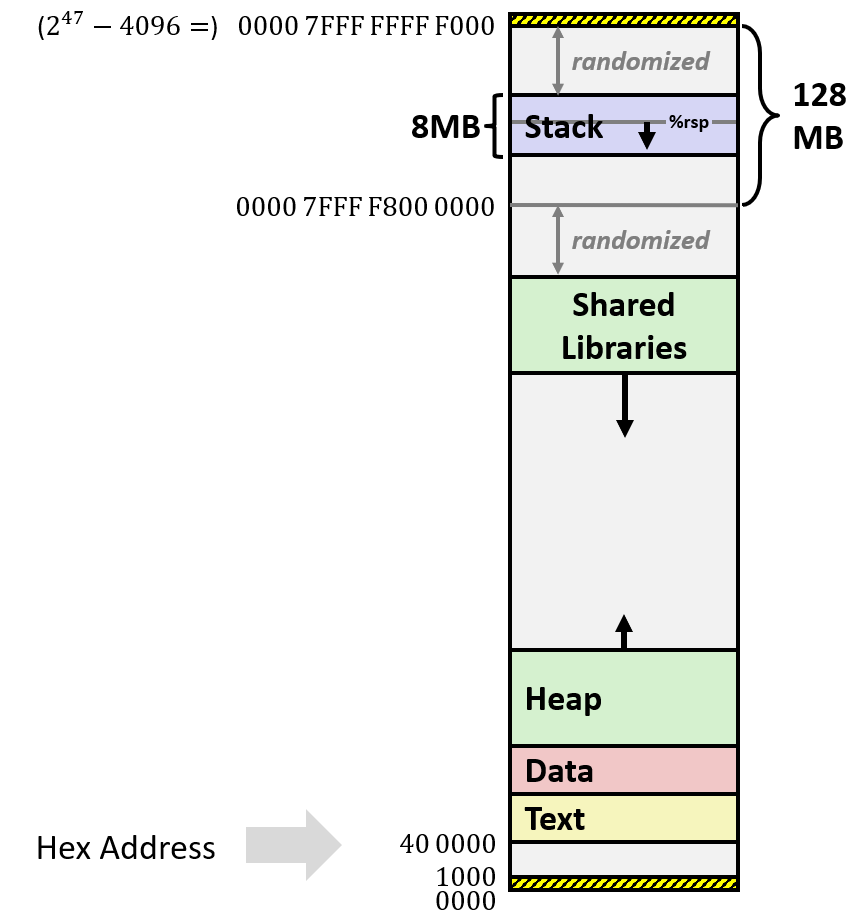
最底层的 128 MB 是栈区（
0x0000 7FFF FFFF 0000，即 $2^{47}-4096$ 至0x0000 7FFF F800 0000），实际 x86-64 栈的实际最大大小在 8 MB 左右，向低地址增长。栈的结构参考 5.2 和 5.3。- 一般操作系统为了保护栈数据不被攻击，一般在栈的前后放置随机数据区域；如果没有这些保护数据，那么栈就放在内存最底层（
0x0000 7FFF FFFF 0000的位置）. - 如果运行中的程序试图访问超过这里 8 MB 限制范围的地址，或者访问的地址还没有通过 virtual memory allocator 的分配时，系统会抛出 segmentation fault，并强制结束程序；
- 一般操作系统为了保护栈数据不被攻击，一般在栈的前后放置随机数据区域；如果没有这些保护数据，那么栈就放在内存最底层（
在从最下面看起，位置
0x40 0000开始向高地址位置，有一段 text 区（找不到这个名字的来源），是程序存放运行机器代码的位置（信息从可执行文件读入）。我们将在 “链接” 一章详细讨论这个部分的具体内容。数据只读（Read Only）；再下面一段是 Data 区，是用来存放程序开始时就分配的数据。存放的内容包括：
- 静态分配的数据；
- 程序中的全局变量、静态值、字符串常量；
- ……
再下面一段是堆。堆和栈的分配方式完全不同，堆空间在运行时按代码动态分配（dynamically allocated，一般由 malloc()、calloc()、new 等方法创建，free()、delete 等方法销毁），最有趣的是，堆的分配位置和生长方向不固定；下面将由例子来说明；
堆下面有一段空间的位置是外部库（Shared Libraries），存储的是类似 malloc()、printf() 的库函数。它们一开始是作为动态链接库存储于磁盘上，在程序加载时，它们也载入内存的这个位置，供程序使用，称为动态加载。我们将在 “动态链接” 这一部分详细讨论具体内容。
我们运行下面的程序进行测试：
1 |
|
通过 GDB 调试可以发现，在 Linux 内存中，big_array、huge_array 和 global 这三个全局变量分布在大致 0x600000 的低地址的位置，位于 Data 区；局部变量 local 在地址 0x7FFE 0000 0000 的大致位置，位于内存栈区；对于函数 main() 和 useless() 而言，它们的地址在 0x400000 附近，位于 Text 区；
而对于 phuge1、psmall2、phuge3、psmall4 来说略有特殊。它们是使用 malloc 分配在堆里的，但是它们的位置差别较大：占用空间很大的 phuge1 和 phuge3 位于更靠近栈区的堆中，而占用空间较小的 psmall2 和 psmall4 则位于更靠近 Data 区的堆中。大致情况如下图：
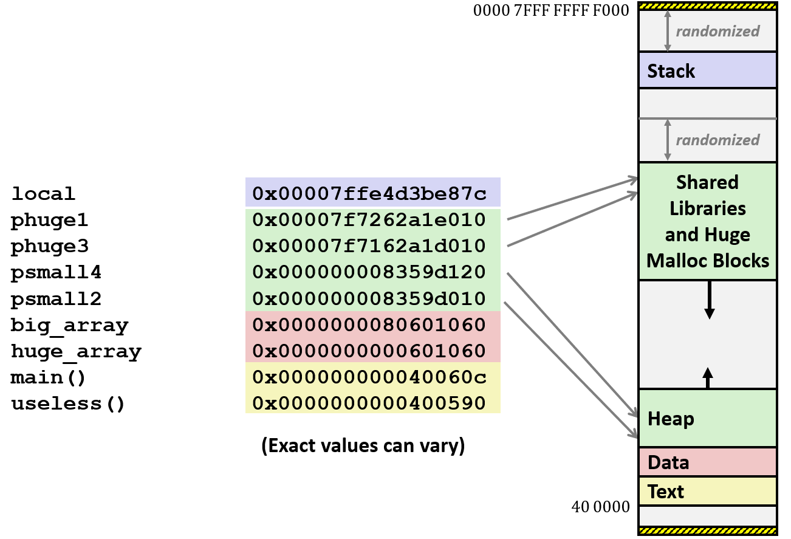
奇怪的是，malloc 大数据量的堆在上方和 shared libraries 紧贴，向低地址增长；而普通数据的堆在 Data 区的下方向高地址增长。可以预见，当两块 heap 碰头的时候，malloc 会返回空指针。
这个规律目前还没有解释，等到以后的章节慢慢了解。
7.2 Buffer Overflow
在 Chapter 0-0.3 的越界实验中，我们就讨论过内存缓冲区溢出的问题。当时造成的后果是结构体中的其他成员的数据被修改。本节会详细解释内存缓冲区溢出的各个方面的影响和应当措施。
7.2.1 The Vulnerability
继续以 0.3 中的实验代码为例：
1 | typedef struct { |
当 i 参数取值大于 1 时会污染 s.d 的值，当 i 参数大于 6 时，可能会出现 segmentation fault；
但内存缓冲区溢出的问题不仅仅是内部开发者编写错误这一个小问题。相反，这是一个大问题。
- Buffer overflow 的出现：when exceeding the memory size allocated for an array;
- Buffer overflow 为什么是大问题：它是头号的技术层面上的安全漏洞（#1 technical cause of security vulnerabilities）；
- Buffer overflow 产生的原因列举：
- Unchecked lengths on string inputs（外部因素：不对输入字符串的长度和内容进行合法性检查）；
- Illegal indexing / referring / modifying memory（内部因素：不对访问 memory 的参数进行检查）；
下面举一个实际点的例子：
1 |
|
上面的 gets 函数不管 dest 的实际被分配的大小，直接进行输入，很可能在内存中出现 Buffer Overflow。于是总结出导致 Buffer Overflow 的罪魁祸首之一：存储字符串，却不检查边界情况的库函数；C 库里有很多这样不检查边界的库函数：scanf、fscanf、sscanf（等 scanf 家族，尤其是使用 %s 格式化参量）、strcpy、strcat（等字符串移动家族）……
现在看看运行这个程序会出现什么问题（如果自己想试试的话，记得关闭 gcc 栈保护 -fno-stack-protector）：
- 如果输入短一点的字符串（长度小于 24 个），那么程序很可能会正常运行；
- 如果输入很长的字符串，那么程序会报告 segmentation fault；
那么，都是缓冲区溢出，为什么短一点的看起来不会出问题呢？这时候就需要从汇编代码解释了。我们生成上面的汇编代码：
1 | echo: |
首先观察，一开始系统为 echo 函数的栈帧分配了 24 bytes（0x18）的空间，因此，如果输入的输出加入超过了所有的栈空间，进入没有被分配的 memory 时，就会报告 segmentation fault。
所以，（当没有使用 gcc 栈保护机制时）安全问题通常就出现在 “溢出内容超过了原来分配的位置，但是没有超过栈的总体空间” 这种情况下。这时系统不会抛出 segmentation fault，栈中数据只能任由输入者篡改。
再来看看内存对应的情况：
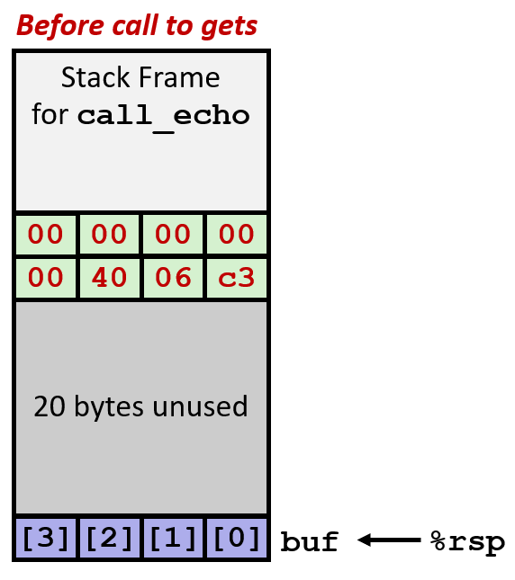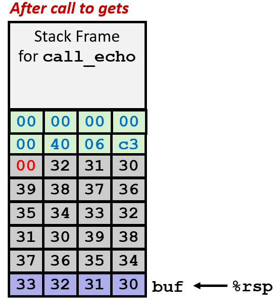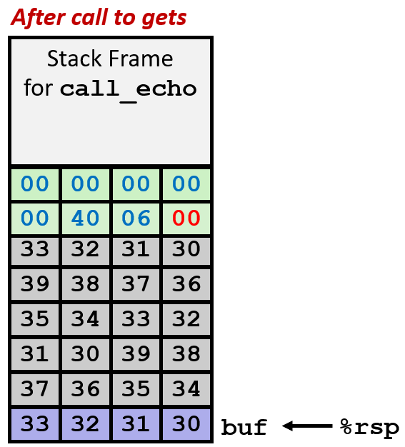
如上左图，当 char buf[4] 声明后，在程序初始化时，编译器为echo 预留了 24 bytes 的空间；echo 栈帧的最顶层存放的是局部变量 buf 数组对应的空间大小是 4 bytes，一切都很正常。
如上中图，我们不妨假设 call_echo 在 return address 里存放的地址是 0x4006C3（echo 运行结束后应该返回的地址）；如果输入字符串内容超过了 buf 能承受的 3 bytes，则会出现 buffer overflow，如图，数据覆盖了 buf 下方的 20 bytes 其他区域的数据，但因为这个例子中，恰好那个区域没有存放其他数据，所以表面上程序没问题；
如果那 20 bytes 空间放了其他数据，那么会被篡改；
但，如果输入长度更长，那么字符串序列会溢出的更长，如上右图所示，污染了 Return address 的话，问题就出现了。当 echo 想要结束时，会因为 Return address 被修改而转移到一个不知道什么的地方，很可能导致 segmentation fault；更严重的，如果恰好跳转到一个奇怪的函数中，并且还能运行、没报错，那么坏了，程序不会按预期的方式继续运行，这样的 bug 非常隐晦；
7.2.2 Stack Smashing Attacks
在上面说到的情况下，如果攻击者想要函数在输入后，跳转到不应该执行的、但是程序里面有的函数中，会让程序出现一些意料之外的行为。
例如登录场景：攻击者想要输入一串内容，让软件跳转到登陆成功的函数中;
这种攻击被称为缓冲区溢出攻击（stack smashing attack），这种攻击就是利用了技术人员不注意输入检查，而导致的缓冲区溢出的问题。
实现这种攻击的原理比较简单，就是输入无意义的填充字符（padding）让输入的内容 buffer overflow，并且在末尾设置一个想要跳转到的函数的地址，并且只需让末尾的地址恰好覆盖 return address 就行。
如下图所示，正常的流程是 P() 调用 Q()，P 函数在 return address 中写的是 A，也就是 P 函数中调用 Q 的下一行；但由于 Q() 中的 gets(buf) 有溢出风险，在攻击者输入 padding 字符 + S 地址组合的字符串后，gets 函数将缓冲区数据覆盖了，如下图右，return address 被改成了 S 的地址。这样在 Q() 执行结束后，会跳转到 S() 函数中，而不是原来的 P() 中：
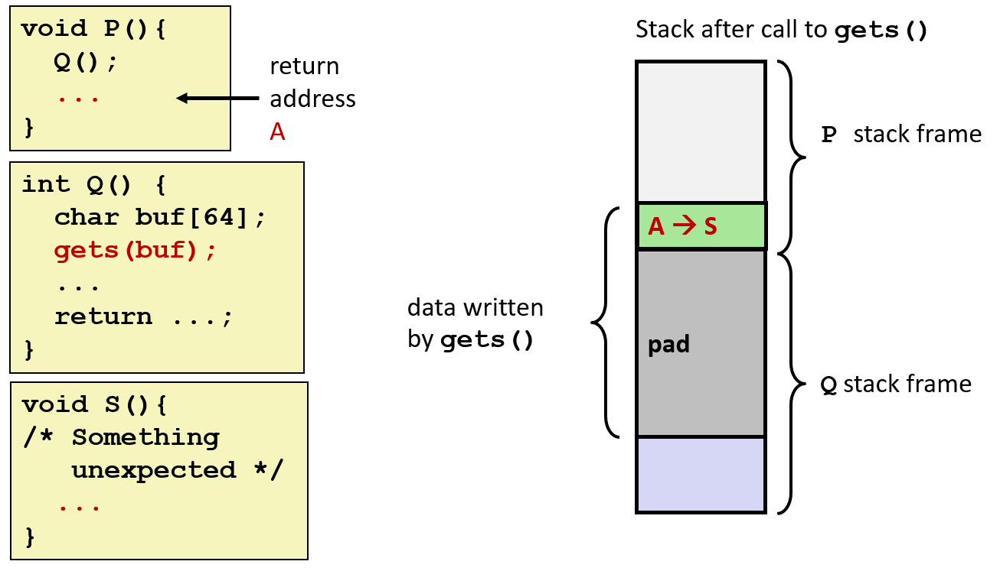
做法很简单，但是编译时要关闭 gcc 的栈保护机制（-fno-stack-protector）。现在大多数 C/C++ 编译器都有这项功能，利用栈随机化、“金丝雀” 检查等技术，打乱栈空间的实际排布、利用栈两端的 “金丝雀” 侦测栈溢出，发现就立即终止程序，让攻击难以进行。（后面会详细讨论）
- 找到有导致缓冲区溢出风险的函数（像之前提到的
scanf家族、str家族），并且技术人员没有为这些函数的输入进行检查； - 反汇编找到想要跳转的函数（也就是上面的
S）的地址； - 反汇编找到汇编代码中编译器为
Q函数分配的栈帧大小，计算出pad填充字符的大小，使得S地址恰好覆盖 return address； - 将 padding 数据 +
S的地址（注意大小端序的问题）转换为字符串，运行程序并输入即可。
7.2.3 Code Injection Attacks
也是在上面说到的情况下，如果有攻击者刻意如此设置，让缓冲区溢出到 return address，并且恰好让 return address 指向攻击者事先设计好的 exploit code 中，那么程序就会执行攻击者设计的函数，从而给计算机造成威胁。
这种攻击被称为 代码注入攻击，思路和上面的 stack smashing attack 如出一辙，只不过攻击者不满足于执行软件内的其他函数了，他要执行的是自己嵌入的函数，危害可能更大。
实现攻击的原理就是，攻击者输入编码有 exploit code + padding string + pointer to exploit code 的内容，让读入程序执行结束后跳转到攻击者刚刚输入的 exploit code 中执行，如下图所示：
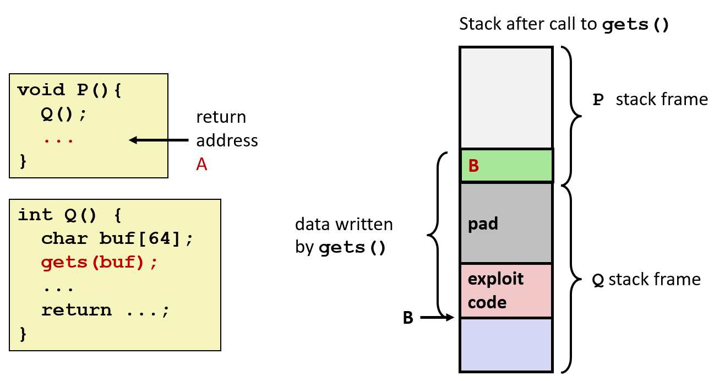
更聪明的攻击者会在运行完 exploit code 后修复溢出的缓冲区，并且跳转到原来的函数，伪装成没有被攻击的假象。
知识拓展：计算机病毒和计算机蠕虫的区别
- 蠕虫：可以通过某种隐蔽的方式，进行自我复制、独立地在机器上运行预期代码；
- 病毒：可以通过某种隐蔽的方式，进行自我复制，攻击一个程序，并改变这个程序的行为，但自己不能独立存在。
7.2.4 The Protection: in personal respective
Avoid overflow vulnerabilities when writing a program
例如之前的
gets函数有风险，可以换成fget指定读入缓冲区的大小；
strcpy换成strncpy、scanf使用时不轻易用%s格式，而使用%ns，或者直接用fgets;
Avoid overflow vulnerabilities in system-level
栈随机化（stack randomization），是更宏观策略 ASLR (Address Space Layout Randomization, 地址空间布局随机化) 的一部分；
这样的话，每次运行程序，栈和堆上变量的位置偏移 offset 会随机产生，攻击者就没法找到准确的攻击代码的插入位置了；
Non-executable code segments：在栈中规定禁止执行代码，只有在 Text 区 / Shared Libraries 区才能执行；
以前人们在内存中每一个 chunk 前放置 3 个 flags，类似 Unix 上的 可读、可写、可执行三个权限，对于栈区的空间中 flags 应该是可读、可写、不可执行；
Stack Canaries（栈 “金丝雀”），在栈中的 buffer 两端设置特殊的随机值（称为 “金丝雀”，早期人们下矿就用金丝雀的生死来判断矿井中瓦斯是否超标），在写入 buffer 的函数退出前检查这些值。如果这些值被改变了，那么说明 buffer overflow，可能会出问题，就立即终止接下来程序的执行；现在这个技术已经在
gcc中成为默认的编译选项：-fstack-protector;
这里简单从汇编层面分析一下 “金丝雀” 是如何实现的。
还是以上面的
echo函数为例，这时我们编译就删除-fno-stack-protector这个参数：
2
3
4
5
6
7
8
9
10
11
12
13
14
15
sub $0x18, %rsp
mov %fs:0x28, %rax
mov %rax, 0x8(%rsp)
xor %eax, %eax
mov %rsp, %rdi
callq 4006e0 <gets>
mov %rsp, rdi
callq 400570 <puts@plt>
mov 0x8(%rsp), %rax
xor %fs:0x28, %rax
je 400768 <echo+0x39>
callq 400580 <__stack_chk_fail@plt>
add $0x18, %rsp
retq我们一步步分析：
第一步给
echo栈帧分配了 24 bytes 的空间，非常简单；第二步用到了一个没见过的东西
%fs:0x28，实际上%fs是一个为原始 8086 芯片设计的一个寄存器，由于向下兼容，所以它现在还能以某种方式使用，但是基本很少用，甚至已经找不到它的文档了……只需要知道%fs:0x28是内存的某个隐匿部位，相当于随机数 “金丝雀”，我们将这个数放到%rax，第三步再将这个值放到%rsp所指向的下面 8 bytes 的位置——这就意味着buf只要溢出 8 bytes 就会被察觉；⚠
%fs不是真正可用的寄存器，它是 segment register（段寄存器）in protected mode，其中的值是指向某个有效位置的指针。所以只能用如此方式（%fs:0x28）取出值，它（%fs:0x28）实际上是内存中某个位置的引用，并且每次运行，这个值都会改变。这也回答了为什么不能直接将
%fs:0x28的值mov到内存中。——以上摘自 StackOverflow;
第四步将
%rax清空为 0，然后执行普通的echo操作，省略；直到倒数第 5 步（第 10 行），系统将 “金丝雀” 取出到
%rax并和原值%fs:0x28比较，如果不等就是缓冲区溢出，立即调用__stack_chk_fail报错终止执行；
7.2.5 【New】Return-Oriented Programming Attacks
在上面的许多防护措施出来后，给攻击者带来很多难题：
- 栈随机化使得他们很难预测缓冲区的位置；
- 栈区无法执行代码，使得他们插入代码也没用；
于是攻击者有了一些替代性的措施，能够突破上面的两个障碍（栈随机化 + 禁止栈中执行代码）：
- 利用已存在的代码，例如标准库中的代码。因为它们不在栈区和堆区，位置不会轻易变动；
- 利用 x86 架构中
ret指令的特殊行为，来执行代码；
下面介绍这种攻击的原理。
这种攻击利用的部件称之为 gadget，通常是各个函数的包含 ret 指令的最后几行或者一段，如下：
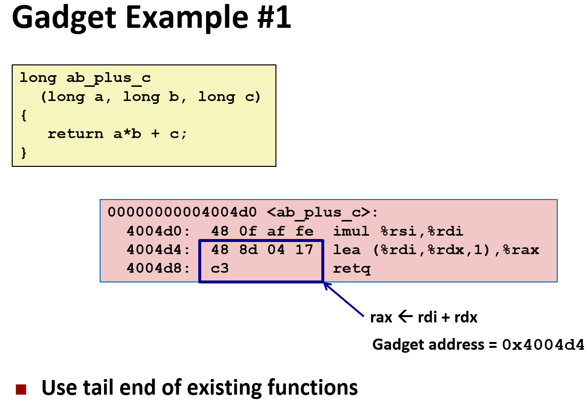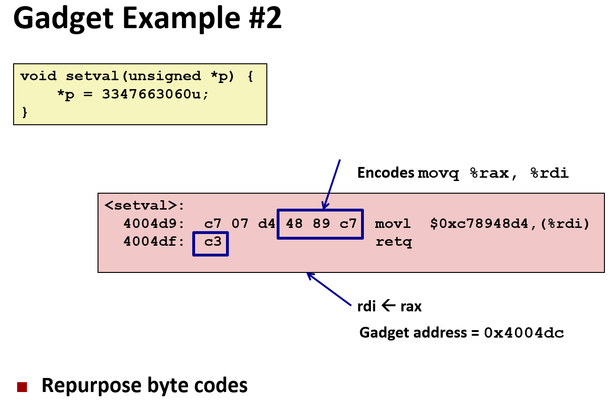
这些毫无关系的函数的汇编代码最后几行甚至几个片段总会包含一些指令，例如将某个寄存器的值加多少、将某个寄存器的值移动到哪。它们紧接着 ret 指令（对应汇编码 0xC3）。这就意味这我们可以收集这些 gadget 的地址，按照我们的需求依此排列这些 gadget，通过输入将这些地址溢出到栈里，让栈充当程序计数器的角色，反复执行 gadget1 -> ret -> 执行 gadget2 -> ret -> …，越过了上面两个限制，将所有 gadget 连在一起，最终让程序段达到我们的目的，如下图：
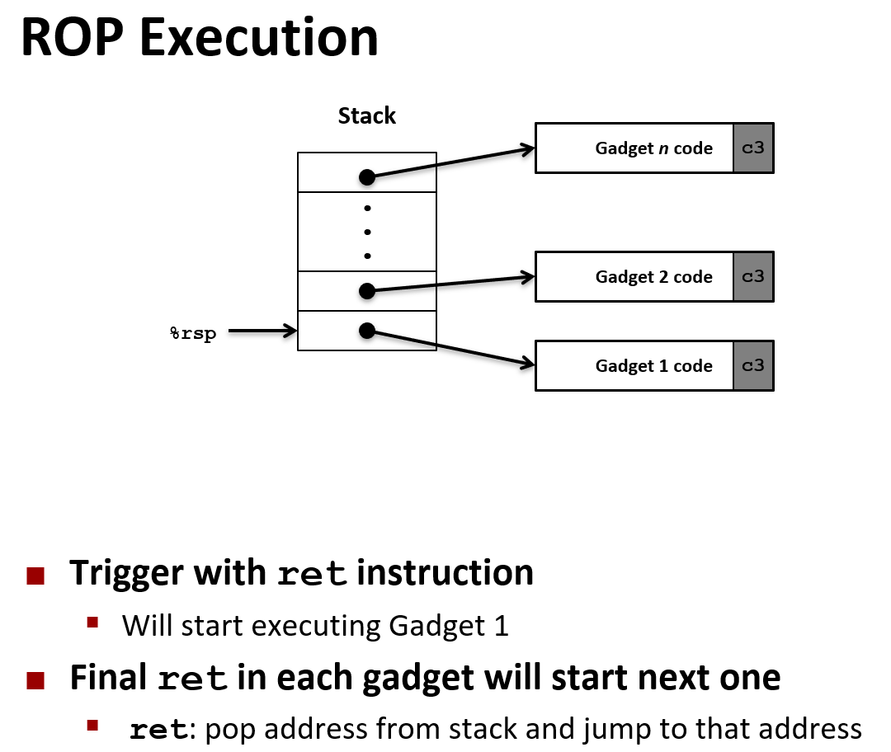
可以说是顶级的 “断章取义”！
不过有两个缺点：
- 这种攻击仍然不能突破 “金丝雀” 的防护，因为这毕竟是栈溢出；
- 各个 gadget 需要大量地查找，比较费精力。有些人会在标准库中积累一些 gadget；
7.3 Union in Memory
C 中有一个特殊的数据结构：Union，声明方式与 struct 几乎一样：
1 | union U1 { |
但用法完全不一样。Union 的所有域共用一块最大的域大小的内存，这就导致在改动一个域的数据时，其他域的值也会改变；所以 Union 一次只能使用一个域，或者用在通过别名引用不同的内存的场合。Union 用的地方少，但在单片机、掩码的领域用的比较多。
还有就是之前的 Data Lab 中用于 bit-level representation 的 float 和真实的 float 之间相互转换，不会改变 bit pattern，也能用到 Union（当然不是解题答案，因为不允许）；
使用 Union 也要特别注意端序的问题！！！
7.3.1 Union Allocation
对联合体（Union）而言，内存分配比较简单，只需要判断所有域中占用空间最大的那一个来分配就行。例如上面的例子就是 8 bytes；
7.3.2 Summary of Compound Types in C
- Arrays
- Contiguous allocation of memory（1-D & Nested Array）；
- Aligned to satisfy every element’s alignment requirement；
- Pointer to first element；
- No bounds checking；
- Structures
- Allocate bytes in order declared；
- Pad in middle and at end to satisfy alignment；
- Unions
- Overlay declarations；
- Way to circumvent type system；
7.4 Summary of Chapter 7
本章的内容相较于之前两章较少，但是也很重要。
本章开始我们就从更全面的角度来观察 x86-64 Linux 的完整内存布局，我们落脚于实际，考虑到实际能够使用的内存不过 128 T 左右，建立了一个 0x0000 7FFF FFFF F000 ~ 0x40 0000 的内存图谱。
在这个图谱中，自高地址至低地址分布栈区（stack）、外部库区（shared libraries）、堆区（heap）、数据区（data）、机读代码区（text）；
这些位置都由 virtual memory allocator 进行管理，如果访问了超出整个内存的范围，或是不在已分配的空间内，系统都会抛出 segmentation fault；
我们了解到，栈区位于内存的最高地址处，内部存放见 5.2 和 5.3，实际大小约 8 MB（x86-64），地址在 $2^{47}-4096$ 至 0x0000 7FFF F800 0000 中，前后可能含有因为 ASLR 或 “金丝雀” 产生的随机数据，总共约 128 MB；
在栈区的上方（这里把较低地址的称为 “上方”）是 Shared Libaries 区，它存放重要的外部库函数，是动态加载至内存上的部分。如果堆中有较大的数据，可能部分的堆区会与外部库区毗邻，并且向低地址生长。
跨过中间大片的未分配的区域向低地址看，就是堆区，由代码函数手段分配和释放的区域，存放大部分由手动分配的普通变量，向高地址生长；
在堆区的上方，是数据区，存放程序开始就分配的数据，包括静态数据、全局变量、字符串常量等；
再向上就是内存的地址最低处，机读代码区，开始于 0x40 0000，具体内容会在 “链接” 一章中讨论。
以上区域，text / data / shared libraries 区域运行时可读可执行，heap / stack 区域可读可写不可执行。
介绍完 x86-64 Linux 整体的内存分布，我们进一步讨论了 Buffer overflow 的原理和危害性。
Buffer overflow 出现的内部原因是对数组或其他 memory 不恰当的读写访问，外部原因是不对输入字符串进行长度和内容的合法性检验。
最后 Buffer Overflow 或者触发 segmentation fault 导致程序崩溃，或者恰好进行了不恰当的跳转，让程序行为不可预测、难以调试，或者被不法分子利用后，危害计算机系统的正常使用。
从一个使用容易内存缓冲区溢出的 gets 的函数 echo 出发，我们讨论了输入不同长度的字符串对缓冲区溢出的影响，进而推出了 3 种利用缓冲区溢出特点的攻击行为（Stack Smashing Attacks、Code Injection Attacks、Return-Oriented Programming Attacks）。它们共同点是，都利用了溢出影响 return address 的特性，使得程序跳转到攻击者指定的位置执行；但从具体操作上各有差异。
之后我们介绍了两类、四种针对内存缓冲区溢出攻击的防护办法。两类中的一类是从开发者自己做起，尽量避免使用有缓冲区溢出风险的函数；另一类是从系统层面做起，主要分为 3 种，分别是栈随机化、栈区禁止执行代码 和 栈 “金丝雀”。这 3 种防护思路能够轻松应对 Stack Smashing Attacks 和 Code Injection Attacks，但只有 栈 “金丝雀” 能够防护 Return-Oriented Attacks。
我们仔细分析了 栈 “金丝雀” 的汇编层面的实现，更加确信这个至今没有被破解的防护方法的强大。
本章最后，我们接触到了 Union 联合体在内存中的分配和表示，反复强调使用 Union 时一定要注意端序的问题，以免出现字节序方面的编程错误。
第 3 ~ 7 章已结束，请完成 Bomb Lab & Attack Lab！
 wechat
wechat alipay
alipay